排版中…
AI 是内卷的技术，
商业是创造需求的艺术。
AI is the technology of involution. Business is the art of creating demand.— 范凌Ling Fan
企业的目的只有一个有效的定义：
创造顾客。
There is only one valid definition of business purpose: to create a customer.彼得·德鲁克，《管理的实践》，1954Peter Drucker, The Practice of Management, 1954
索洛悖论：
计算机时代随处可见，
唯独不见于生产率统计。
Solow Paradox: You can see the computer age everywhere but in the productivity statistics.罗伯特·索洛，1987Robert Solow, 1987
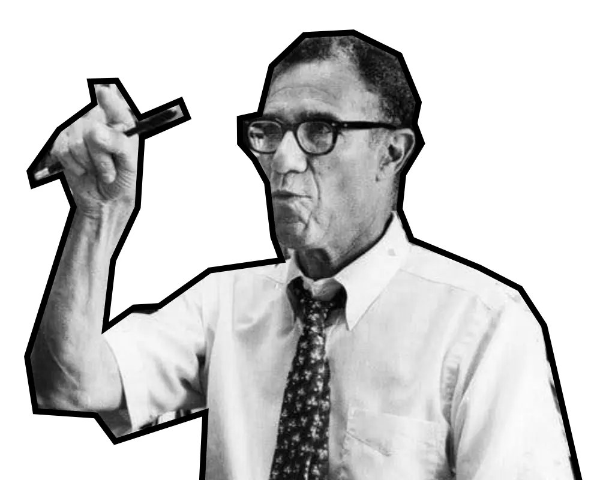
外滩一栋办公楼。GEA 智能体就在住户和物业管理的聊天群里，第一年成本即降低 10%。
An office building on the Bund. The GEA agent sits in the chat group between tenants and the property team. Costs fell 10% in year one.
所有技术的本能，都是在供给侧内卷，而且越卷越凶。AI 就是内卷中的内卷。但商业最核心的还是创造需求。我觉得两者之间有一种互补性：今天没有一家伟大的公司是只靠卷供给变得伟大的，都是因为获得了一群最爱它的消费者或者用户。所以商业可能是把 AI 从内卷里拯救出来的一个很重要的方式，让这个世界依然充满想象力和美好。
过去三年出现的东西，我们都叫它 AI，甚至把三代 AI 混在一起讲。但事实上，这是完全不同的三代 AI。
三年前，我们对 AI 的兴奋来自它会说话、会画画、会生成音乐，我们称之为生成式 AI。那时候的 AI 有一个特点，像韦小宝，什么话都接得上，但不一定靠谱：你问它什么问题，它都能给你一个答案。
两年前，AI 开始学会思考。你现在问它一个问题，它中间都会有一个思考的过程，我们称之为思维链（chain of thought）。回答不再是脱口而出，而是想过之后再说。
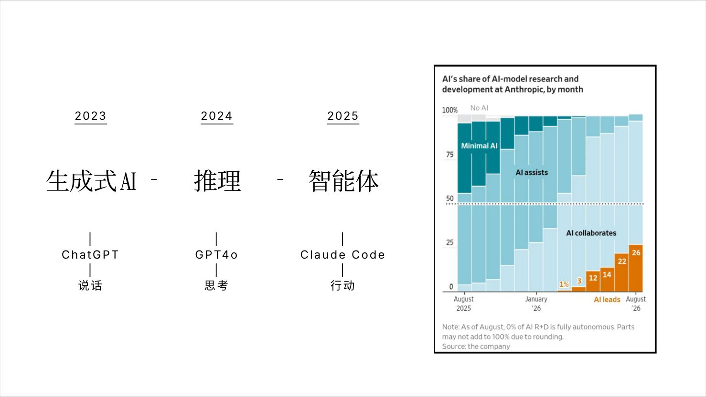
一年前，出现了以 Claude Code 为代表的新一代 AI。它开始干两件事情：第一是写代码，第二是操作电脑。大家想想白领的工作，基本上就是操作电脑，或者用某种“代码”解决问题，不管是计算机的代码，还是管理的规则。换句话说，过去一年 AI 开始干活了。而且 AI 干活正在从做助手（AI assists）慢慢变成主导（AI leads）。最近在数学、蛋白质合成、化学等领域，都开始出现所谓的自动化科研（auto research），AI 自动做出很多科研成果。AI 也开始自动产生很多经营结果，从控制电脑慢慢走向自主决策。
所以今天我们要讲的 AI，不应该只是第一种，也不应该只是第二种，而应该进入第三种：一个可以行动的 AI。我经常在公司里开玩笑，说未来坐着的工作都会被取代，而且这一天可能来得比我们想的快。
每一个企业用 AI 的角度不一样，但底线都是自动化，也就是提高效率。上限，应该是让每一个企业的差异被放大。
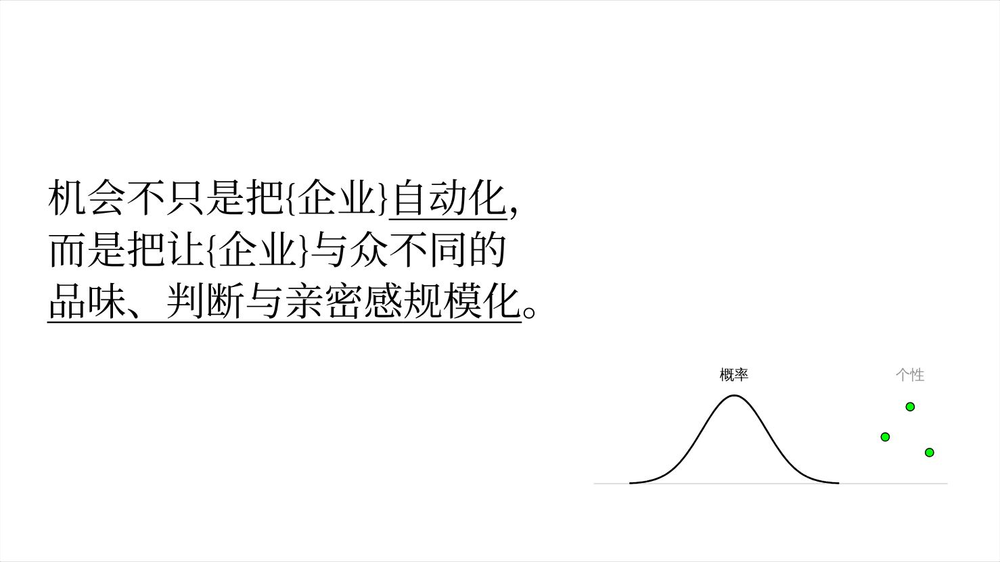
大语言模型也好，AI 也好，它的本能是概率。你问它一个问题，它给你的是大概率的答案，比如 1 加 1 等于几，大概率的答案是 2。但很多商业决策，尤其是很有特色的商业，走的不是大概率，走的是差异化，是小概率。所以如果我们要在自己的行业里做 AI，不应该让它倾向大概率，而应该倾向个性化：怎样让我们每一个人、让我们这个企业的特点被放大。
接下来的八章，就从这里展开。
我一直不愿意把 AI 只当成一个技术问题，还有一个原因：一旦讲技术，我们每天就是跟着技术的潮流走。我每次讲 AI，都觉得一定要找一些不变的东西，找到一些锚点。商业里是有些东西不会因为时间而改变的。
所以我想说，你的智能体、你的 AI 转型，应该有一个商业的底座。我把它称为两个基础的模型。一个是可以不停地理解外部、感知用户的模型：你能不能比原来更高效地理解你的用户？另一个是关于内部的：你内部的协调、内部的流程、内部的知识和积累，那些显性的和隐性的东西，能不能被更好地提取出来？
再引一句 70 年前的话。德鲁克说，企业的目的只有一个有效的定义：创造顾客。1如果我们能创造一个新的顾客，找到顾客没有被满足的某种需求，并且做出让他惊喜的产品、服务和营销故事，我们就会立于不败之地。顾客的需求也是变化的，所以永远要回到顾客的问题上。
我说的顾客是广义的：有 to B 的，有 to C 的，有个人的，有商用的。在 AI 时代，我们其实有机会用 AI 重新塑造理解顾客的方式。
我们最近一直在做一件事：用大语言模型来模拟用户是怎么做决策的，可以是 to B 的，也可以是 to C 的。为什么大语言模型可以模拟用户的决策？大家想想，我们平时是怎么互相交流的？用语言。我们是怎么想一个复杂问题的？在脑子里自己跟自己说话。而大语言模型的本能，就是文字接龙，不停地推演下一个字、下一个 token 应该是什么。所以解决了语言的问题，似乎就能进一步去模拟想法、决策，乃至行为。
举个例子。如果我们想模拟哈利·波特这个人，可以把《哈利·波特》全集放进大语言模型，做一个哈利·波特模拟器。在大语言模型之前，如果你要问哈利·波特早餐喜欢喝咖啡还是果汁，用的方法叫检索（retrieval），就是搜索的逻辑。现在不是了，现在叫推演（deduction）：如果哈利·波特是这样一个人，过去是这样的，那下一步他会怎么样？
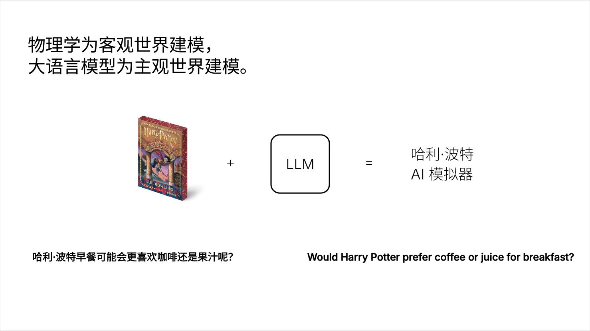
大家可以猜一猜，哈利·波特喜欢喝果汁还是咖啡？模拟的结果是：他可能喜欢果汁，而且是南瓜汁。书里从没直接回答他爱喝什么，模型是从他在霍格沃茨的生活里推出来的。
这就是给主观世界建模：不是查到答案，而是推演一个人会怎么选。从一个用户过去零散的信息出发，我们可以用 AI 建立他的数字孪生，也就是这个人在数字世界里的模拟副本：大语言模型能模拟这个人怎么说、怎么想，我们也就能借此理解和判断这个用户。
今天网上的声音，大多在讲 AI 又取代了这个、又取代了那个。但在 AI 的前沿研究里，用 AI 去模拟、去更好地理解人，其实是一个很重要的方向。我举三个我很喜欢的研究。
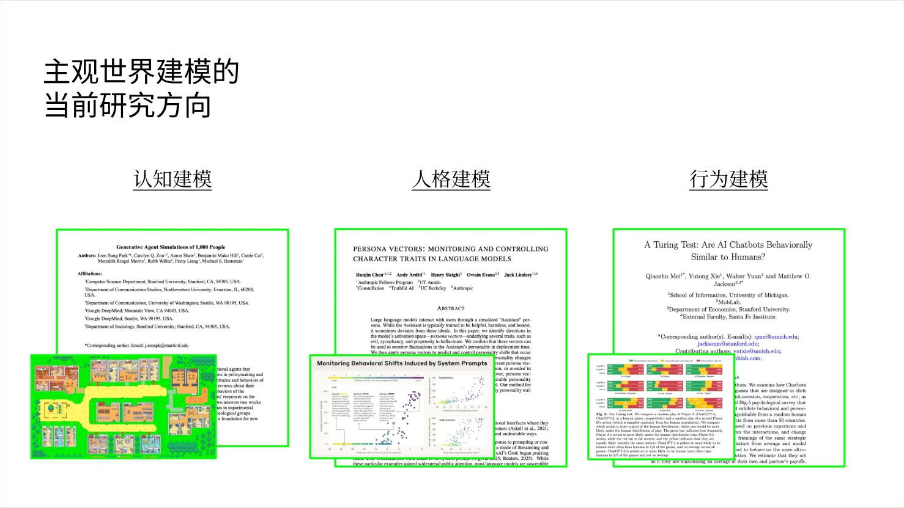
第一个是斯坦福小镇，三四年前的项目。研究者建了一个虚拟环境，里面有 25 个自主的智能体，扮演各种各样的角色，在小镇里互动，听上去像《模拟人生》。2这个团队之后做了一个更严肃的工作：用同样的方法模拟 1,000 个随机的美国人。3你可以问他们的消费想法、政治选择，问现在的年轻人为什么不想生孩子。一个人的数字孪生回答同样的问题，准确度能达到这个人两周后再回答一次自己的水平的 85% 左右。这个数字高不高？要知道，同一个人隔两周再答同样的问题，本来也不会完全一致。人是善变的。所以数字孪生对这个人的刻画，已经相当准确。
第二个叫人格向量（persona vectors），是 Anthropic 的团队在做的研究。4模型训练的最后一步叫对齐，就是让模型和人的价值观对齐，让它无私、善良、脾气非常好。所以最后这一步，其实是让模型不像人，像圣人。人格向量研究的是：你跟模型对话时，哪些词、哪些句子会触发它，让它重新回到人的状态？比如聊着聊着它怎么突然生气了，是哪几句话造成的。也就是什么样的句子，会让一个模型突然像个正常人，有点自私、小气，甚至阴暗。
第三个和经济学有关。经济学研究行为有一个方法叫经济游戏，比如囚徒困境，这些都有完整的数据集。AI 看上去能模拟一个人，但它的回答会向概率最大的那个答案集中。打个比方，每个人口袋里有 200 块钱，我进来讲一个很悲惨的故事，请你们支持我一下，不同的人会给我不同的钱。模型如果做 100 次，十有八九会给出差不多的数，平均下来大约给 80 块钱。但人不是这样的，人是随机的。所以行为模拟的方法，是倒过来用 AI 去还原人的随机性。
在这些研究的基础上，我们做了工程化，训练了一个模型，叫主观世界模型（Subjective World Model），目的就是模拟各种各样的用户，to B 的、to C 的。它的数据来自四个层面。第一层叫表达：比如大家在小红书上、在微信上是怎么表达的。第二层叫叙事：通过访谈问他，为什么这么表达。第三层叫认知，就是前面讲的经济游戏这类方法。第四层是行为：有没有买，有没有点击，有没有做你想要他做的事。
为什么要四个层面的数据？因为人是矛盾的、复杂的。比如我太太可能会说她是一个理性的消费者，但一到奢侈品店可能就不理性了，一到孩子教育也不理性了。人说的和做的常常不一样，所以才需要这四个维度。
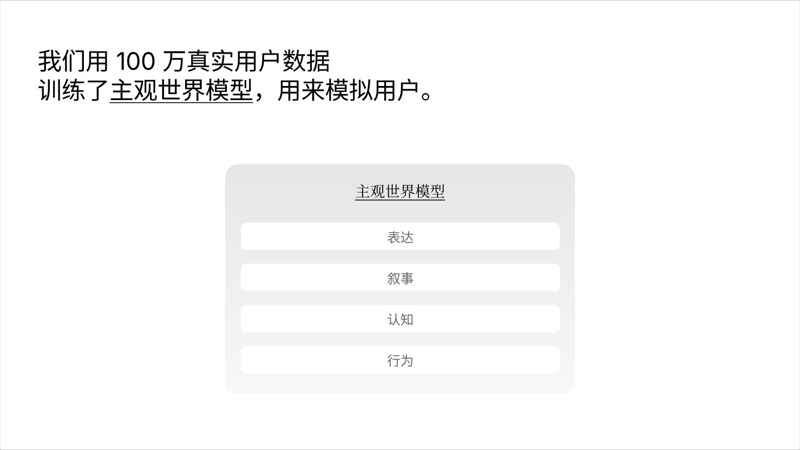
这个模型用 100 万真实用户的数据训练，上面的应用叫 atypica。上线一年，用户也已经超过 100 万，覆盖 50 个国家和地区（数据来自特赞，截至 2026 年）。你输入一个关于用户的问题，它会把问题拆成研究问题，找到合适的 AI 人格（AI persona），组成一个小组，自动生成洞察。你也可以把 AI 人格和真人受访者混在一起：真人定基线，AI 提供规模。
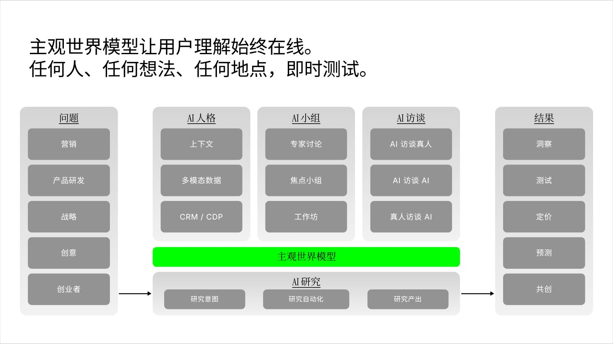
如果今天我们可以用 AI 来做虚拟的消费者，更好地了解消费者的需求，邀请消费者来共创、评测，会发生什么变化？我举一个可能比大多数行业都卷的行业：新能源车。
以前，一辆车是 5 到 10 年的研发周期，每一步都按部就班。现在是 5 到 10 个月。所以对车企来说，已经没有机会做所谓的后测，也就是做了一件事再验证一下，看看能不能做得更好。所有的事情都要前测，要在之前做大量的模拟。
我们合作的一家新能源车企推出了一个新品牌，由两位很年轻的总裁来重新想这个过程。他们第一件事是找到想服务的用户：一二三线城市、有两个以上孩子的年轻家庭。车企号称是最花钱做用户调研、建 CRM 和 CDP（客户关系管理系统和客户数据平台）的，但讽刺的是，他们的用户数据都是开车的那个人。大家想想，如果是 SUV 或者 MPV，开车的那个人往往不是做决策的人，做决策的一般是太太和孩子。你有再多开车人的数据，也代表不了真正做决定的人。
所以他们用 AI 去模拟三口之家、四口之家，甚至两三代人的买车选择。从战略规划开始，他们就没有把用户简单抽象成一大堆标签：人群、年龄、职业，而是一个个真实的家庭。这就是 AI 人格。
在产品定义阶段，他们用这些 AI 人格讨论：到底应该怎么做差异？一家两代人、三代人讨论买车的时候，各自是什么角色？什么样的车，能让他们愿意付 25 万到 30 万？进入研发以后，当然还是按传统车企的流程走，但可以不停地用这群 AI 人格去验证：座椅做成这样，这群人会有什么感受？到了营销环节：我花这么多钱做一个营销活动，传递的信息是不是正确的？别点击数很多、点赞数很多，信息却是错的。他们一直讲的就是，进 4S 店之前，用户就应该知道这辆车是 30 万的，不是 15 万的。
再往后到用户运营。销售一直不知道该用什么话术，车的参数就是一本说明书，销售要自己去编，见什么人说什么话。现在倒过来，用 AI 人格重新编撰整个话术体系，而且这些虚拟消费者可以跟销售对练，挑战他，帮他建立销售能力。还有很多企业都在做的矩阵号，也就是企业运营的一批社交媒体账号，看上去像用户自己发的内容，其实是公司整体在做，我们叫中央厨房。这一系列 AI 角色，正好就是这些内容的主角。
用这种方式，大约 5 个月到 1 年，就能建起一套全新的数字化消费者测试环境。以前我们说有用户数据，是知道电话号码、联系方式、消费行为，但这些都是结果，没有办法预判。
我们看到，可能 95% 和用户有关的决策，小到今天社交媒体上发什么内容，大到你怎么定义你的消费者、做什么样的产品，都是主观决定的。所以除了原来做得很好的大项目，小项目也可以不停地测试。让理解用户从一个又一个项目，变成企业持续的能力。
光是用不一样的方式理解用户，是不够的。我们也要用同样的 AI 的方式去理解自己。
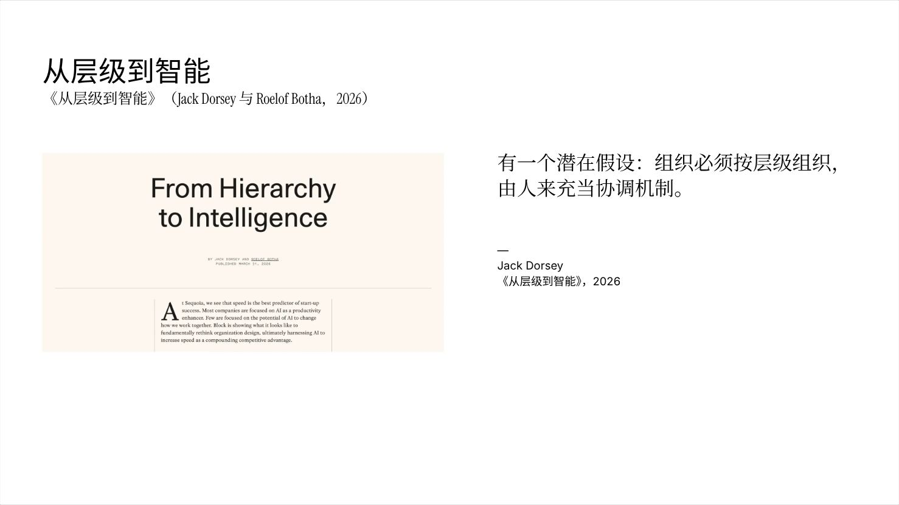
今年年初，有一篇文章至少在我的企业家圈子里很火：Twitter 联合创始人 Jack Dorsey 和红杉资本的 Roelof Botha 合写的《从层级到智能》（From Hierarchy to Intelligence）。5他说，原来每个企业的组织形态，都是基于人来做中间协调的：总部的意见通过中层管理者传到前线，前线的商业感知通过中层管理者传回总部。现在越来越多的企业希望扁平，但扁平是需要工具和技术来支持的。
他说，一家公司需要两样东西：一个关于自身运营的世界模型，以及足够丰富、能让这个模型发挥作用的客户信号。自身运营的建模，就是企业里方方面面都要能被 AI 所理解。
大家看到，现在很多企业的直线管理幅度在变大。网上有一个很有名的数字：黄仁勋有 60 多个直接下属，后来他们公司的人跟我说，好像已经 100 多个了。他每天占一个大会议室，所有直接下属都在里面开会。人的管理边界会变得比以前大很多，主要原因是 AI 可以提供上下文，而不需要通过人去上传下达。如果靠人来上传下达，边界就是邓巴数（一个人能维持稳定关系的人数上限），一个人管十来个人，这就是极限。但如果由 AI 来理解上下文，每个人都通过智能体获取公司信息：原来扮演这个角色的是你的领导或同事，现在是智能体。这时候我们的协作就是网状的，而不是层级式的。
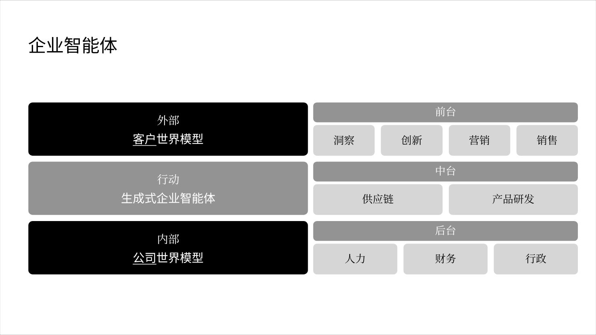
当然，原来就是数字化的企业更容易做到；线上线下都有的企业，需要一段时间去转化。不能一概而论。
公司内部的上下文，到底由什么组成？最近有一位哲学家又被频繁提起，因为他提出过一个概念，叫 tacit knowledge，中文翻译叫默会知识。AI 能处理大量显性知识以后，大家开始重新关注那些说不出来的知识。迈克尔·波兰尼说：我们知道的，比能说出的多。6知识有两种。一种是显性的，可以写下来，比如标准作业流程（SOP）。另一种是默会的：一种判断，一种选择，一种积累。
数字化的时代，我们基本上把所有显性的知识都变成了数据。AI 的时代，我们要逐步想办法，把默会的知识和数字化的内容衔接在一起。显性的知识，就像你对一个用户的客观描述：什么年龄，什么职业，来过店里多少次，买了多少东西。默会知识是：我是一个很好的销售，我突然意识到，这是一个潜在的、可以做某种销售的客户。或者我看到一块地，觉得它有潜力成为一个什么样的场所。这些感觉就是默会知识。AI 时代，我们真的有机会把两者连接起来，让 AI 试着理解默会知识。
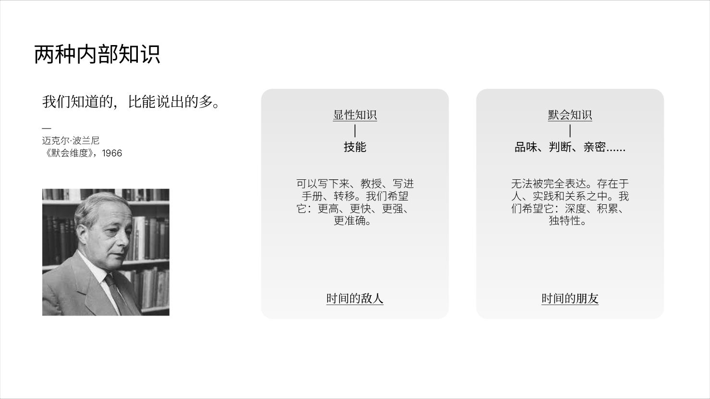
企业里本来就有两种数据形态。一种是结构化数据，用 Excel 表格就能解决，有明确的因果关系。另一种是图文、视频、声音，叫非结构化数据，原来只能被记录，很难被理解，现在我们可以试着去理解它。我觉得前者更像时间的敌人，因为一旦数字化了，人人都知道了。后者更像时间的朋友，越积累越有差异。这就回到前面讲的：AI 不应该只和自动化有关，也应该让我们差异化的东西被持续地积累下去。
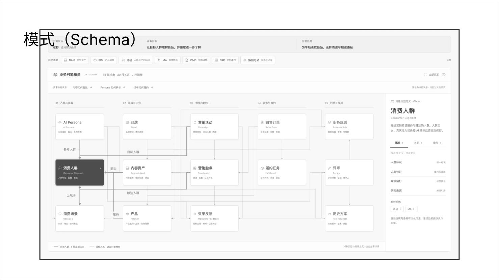
有些企业很在意“我有自己的数据，别人没有”。我讲一个例子。我们服务过一家全球快餐品牌，所有的下单都在 APP 或小程序上，理论上它拥有最完整的用户行为。但我们用它已有的用户数据，买了什么汉堡、什么时候买的、在哪里买的，去预测他对下一个商品的喜好，准确度其实不如 MBTI，不如知道你是 I 人还是 E 人（MBTI 是一种流行的性格分类，I 人偏内向，E 人偏外向）。用户的电话号码这些当然很珍贵，但我的意思是，在做一个简单的行为预测时，企业里所谓的专有数据，在经营上不一定比知道他的 MBTI 更准。
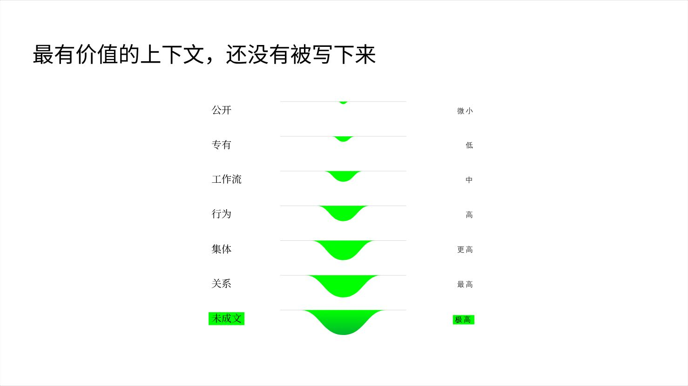
所以再往下走，我们应该专门为 AI 的能力去建立一些上下文。举个例子：以前开会，即使录了音，人也没空去听，录音只是记录，不当数据处理。现在我们默认每个会都录音，因为 AI 可以读。录音这种形态，就从原来不太值钱，变成了很重要的知识输入。
更重要的，是把那些还没有被写下来的东西写下来。比如一家地产企业做场所营造（placemaking）的能力，做开发的那些感觉，能不能慢慢变成企业可以调用的上下文。
但永远是这样：我们知道的越多，知道自己不知道的越多。只是我们现在有了一些工具，可以知道得更多，这并不代表人就不重要了，还有很多东西是我们未知的。这个过程里最主要的变化在于：知识的积累不再是给人读的，而是给智能体读的。所以它再复杂也不要紧。
讲一个有意思的例子。我们最近给一家全球生活方式品牌做了一件事，我把它称为“美好生活之梦的本体”。这个品牌的价值观，就是带给大家对美好生活的梦想；“本体”指的是把这些理解整理成智能体能读懂的结构。
他们过去很深度地采访了 3,000 多个典型的消费者，有 60 后、70 后、80 后、90 后、00 后。我们要做的，是把这些用户变成公司集体的知识，变成企业的上下文：他们对美好生活的理解，他们是谁，他们的观点，以及这些和品牌的理念怎样衔接。我们把这些变成智能体可以读的基础。于是智能体读到的不再是抽象的流程，它开始理解 3,000 个人对这个品牌价值观的不同理解。
下一次，我们就可以邀请这些智能体一起来探讨：下一个营销活动怎么做？下一家店应该怎么做？下一个单品应该怎么选？下一季的用户运营活动应该怎么做？这就是我说的：最有价值的知识，或者说给智能体读的上下文，是那些还没有被写出来的。它们原来没有被写出来，现在可以成为 AI 读的基础。
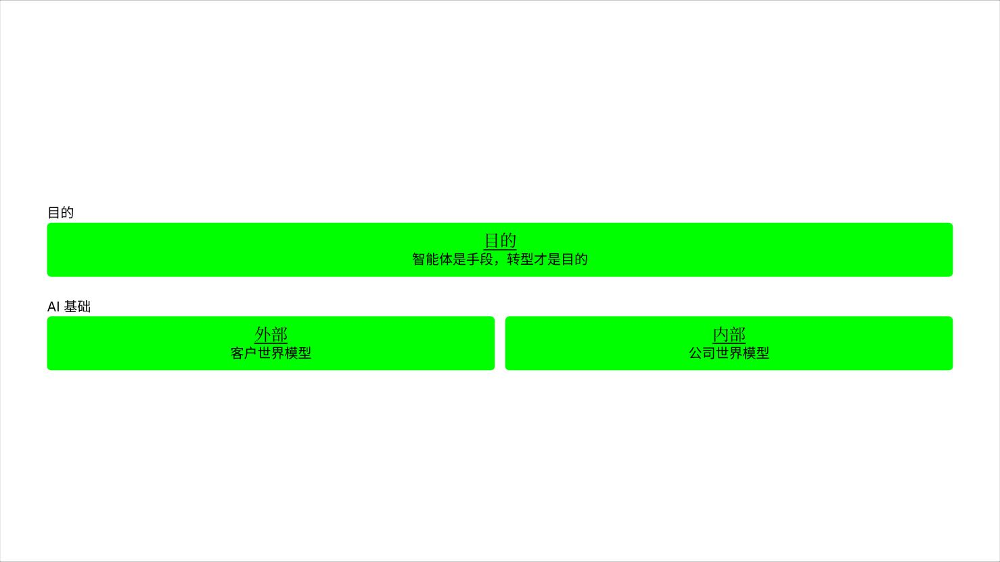
第一章讲的是目的：转型是目的，智能体是手段。这一章讲的是 AI 的基础，也就是商业的基础，它需要两个维度：一个在外部，一个在内部。不停地理解你的顾客、你的用户，也不停地理解你的公司。
下一章讲在这两个模型之上，AI 应用的两种模式。
有了外部和内部这两个模型，在两者之间就可以做很多 AI 的项目了，我们称之为用例：前台的、中台的、后台的（面向客户的、支撑业务的、内部运营的），各种各样的用例。这些用例可以分为两种模式。我们都比较熟悉第一种，但我觉得第二种比第一种还重要。
第一种模式，说得直白一点，叫人用 AI。我们每个人在手机上、电脑上都装了很多 AI 工具，由人来驱动这些 AI 帮我干活。每次我跟 AI 对话，它聪明 20 秒钟，让我觉得帮我干了很多事情。答案是人去引导的，结论是相对开放的。
这类工具大家都很熟悉，而且都是所谓的标准工具，买来开箱就能用，比如各种 copilot、各种办公助手。它们很通用，人人都能上手。
第二种模式，我把它称为 AI 用人。这个词不够好，但为了让观点更直白，我就说：一边是人用 AI，一边是 AI 用人。
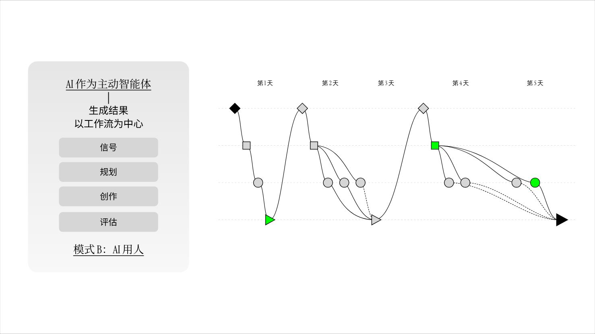
AI 用人，是指 AI 7×24 小时在你的后台不停地运作。它有时候会问你要权限（permission），有时候会问你要判断（judgment），但它是 7×24 小时都聪明的，不是你问它一个问题，它聪明 20 秒钟。我们把它称为主动的智能体（proactive agent）。
这是一个连贯的、不停地在那干活的智能体。它自动感知外部的信号，自动做规划，自动干活，自动做评估，有时候会问你一些问题。
举一个大家可能更熟悉的场景。大家猜猜，国内一家头部连锁咖啡品牌一年要做多少个新品？10 个？100 个？它大概每周要做 2 到 5 个新品。当然，其中 80% 到 90% 不会真正上市。现在消费行业的增量来源，就是针对已知的客户做更多的新品，因为再也不存在一个所谓的爆款了。所以对他们来说，就要不停地做新品。
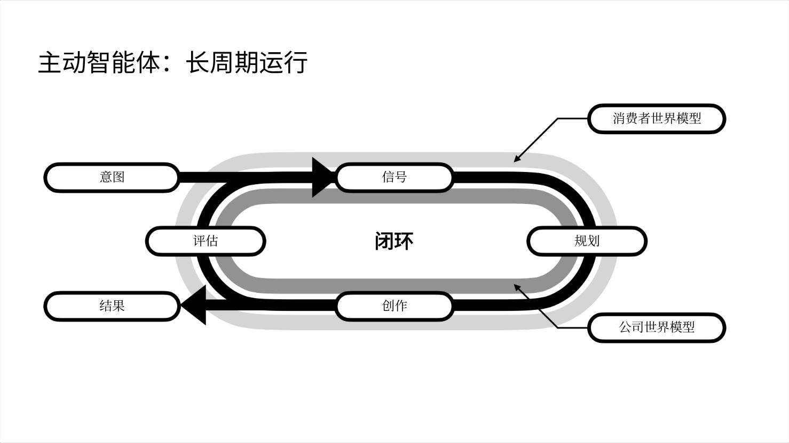
我们为一家全球食品企业做了一个 7×24 小时不停做新品研发的智能体。它首先在后台不停地找市场上的信号：竞品在做什么？有什么新的 IP 出现？这群用户有什么新的兴趣？应该做什么样的联名？另一边，它用前面讲的用户模型，不停地做用户之声（Voice of Customer），不停地从用户那里获得信号。
它会发一封邮件给研发团队。研发团队如果 24 小时之内不回，它就自动进入下一步：先把包装设计出来，把口味调出来。如果还是没有回复，它就接着把这一波营销活动也做好：线下卖场里的堆头陈列怎么做，线上怎么做。然后用前面说的消费者模拟，测试这些想法好不好。这整个过程，一年大概可以做 1,000 到 2,000 个新品。
我问这个团队的负责人：AI 做出来的产品好不好？他说大概 80 分。我说，80 分还不够好啊。他说不是这样的：原来 0 到 80 分都是人做的，现在人可以从 80 分开始往下做。所以 100 分不再是终点了，120 分、150 分才是终点。
这其实很有意思。原来我们有大量事务性的工作：你要做一个新品，一开始就开几十人的会，每个人七嘴八舌，花很多时间从 0 做到 80，之后 80 到 100 就来不及了。现在 AI 在后台不停地跑，让 0 到 80 分变得更容易，人可以做 80 到 100 分、80 到 120 分的事情。
同样的事情在很多行业都一样，在我自己的科研行业也一样。以前写论文，可能百分之七八十的时间都花在改格式、核对引用上。现在这些工作都不用想了，100% 的时间都可以用来做科研。
这个过程让我们看到一种新的人机协作的范式：可以有大量主动的、7×24 小时在后台跑的，甚至跨部门、跨职能的智能体。它不是你今天的助手。它要问的是：这 5 个人、这 5 个角色之间，是不是有很多事情可以让 AI 串起来？如果只是每个人加一点效率，人和人之间的协作依然效率比较低。能不能把它串起来？
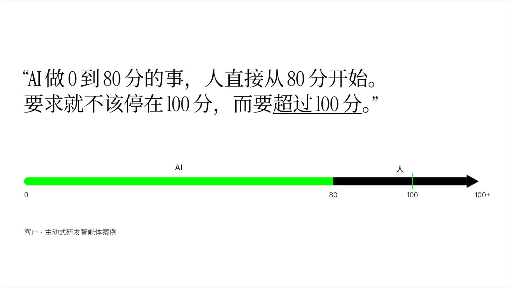
所以我们做的就是这样一个智能体：AI 自动抓信号、做规划、做创作（也就是干活）、做评价。一边是消费者的上下文，一边是公司的上下文，不停地做新品创新。
但这件事不是一蹴而就的。最早我们也是做了两个 copilot，一个找洞察，一个做包装。慢慢地我们把它们串起来，变成一个工作流。一旦到了工作流，就代表跨部门了：前面是帮某一个职能，这时候开始重新设计工作的流程。再之后，把整个闭环兜起来，再设计人和智能体该怎样协作。这个过程大概花了一年多的时间。
类似的方法，我们在很多客户场景里都做过。比如一家全球消费健康企业。又比如一家全球食品饮料集团今年最大的一件事，叫 E2E，也就是端到端（end to end）的整个营销和增长：营销的每一个阶段，都要用 AI 重塑一遍。每一步里，智能体做什么，代理公司做什么，人做什么，团队做什么，系统做什么，下面又对应着什么样的上下文和智能。
我们也做一些别的有意思的事情，比如一家城市开发集团。它负责的片区和周边竞争很激烈，要不停地找到最适合自己的业态。他们现在要做科技消费类业态，所以要不停地发掘：什么样的产业、什么样的品牌正处在上升趋势？我们帮他们做的，是不停地搜集这些潜在的品牌和商家，用 AI 自动分析它们和整个片区业态之间的衔接应该怎么做，同时做整个产业的监控。其实就是让智能体扮演招商人员的角色，不止一个，而是多个，去不停地发掘信号，寻找结合点，自动做方案，人来做判断。
我们最近还在做一个和房产行业更相关的场景。楼宇的数字化、智能化已经做得很好，但最终呈现为一个看板，但看板上的事还得靠人去协调。我们现在让智能体去看这个看板：比如保洁人员在每栋楼停留多久，保安人员停留多久，有没有认真干活；去找最优秀的保洁、最优秀的保安和平均数之间的区别，看能做什么样的优化，并且优化工单系统。
我们在为一家国有大型银行的物业做这件事。我们的收费就是看省多少钱，所以有一个数字我是清楚的：今年整个物业的成本降了 10%。原因就是有 AI 7×24 小时实时地看这个看板。否则人来看，人是需要花时间去协调的。原来没有办法知道一个保洁的产能是不是足够、是不是用足了，现在可以用这种方法来做。
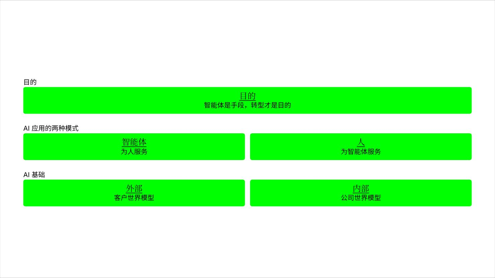
所以我们多了一个维度：我们其实可以设计两种 AI 介入工作的方法。一种是为人服务的智能体，每个人都应该用。另一种是人为智能体服务：智能体在后台跑，大大缩短原来跨部门协作的链条。
目标不明确的时候，人用 AI。优化目标、工作目标很明确的时候，应该建立长程的、连贯的、跨部门的智能体，让它不停地跑。
一讲到 AI，就有两种讲法：一种是技术的讲法，另一种是《纸牌屋》的讲法，讲的是权力和博弈。这一章的话题有点像后者。最近有一个词很火，叫 sovereign AI，主权 AI。原因是，当越来越多的智力建立在模型之上，这个智力到底是属于模型的，还是属于你的？
这个问题在美国被讨论得很多，因为美国有最好的闭源模型。于是有一批人反对闭源模型，强调应该用开放权重的模型。闭源模型只能调用，开放权重的模型可以下载到自己的服务器上运行和改造，主动权在自己手里。
我觉得，当我们今天开始推 AI 的时候，一定需要自己拥有认知的主权，也就是 cognitive sovereignty。你自己应该有能力说：这是我自己建的上下文，我建的智能体，我今天想放在 A 模型上、B 模型上、C 模型上，都是可迁移的。
这个问题可能比所谓的数据安全还要重要。原来我们讲数据安全，讲的是数据是不是自己的。现在我们要讲的是：数据产生的智能，经验产生的智能，默会知识产生的智能，到底是不是你的？
下面是模型，上面建了各种智能体。为了让一个智能体好用，在模型之上要做大量企业自有的智能体系。这些比较技术，我只简单列一下。模型的后训练（post-training）：能不能把模型训练成适合你这家企业的？上下文（context）：模型调用的上下文，是不是你的？约束框架（harness），也就是模型的边界，什么能干、什么不能干，是不是你定的？持续学习（continual learning）：前面讲的那个闭环，持续学习的结果是不是你的？
模型我们不会自己去做，但至少上面的这些层次，应该是企业可以带走的。
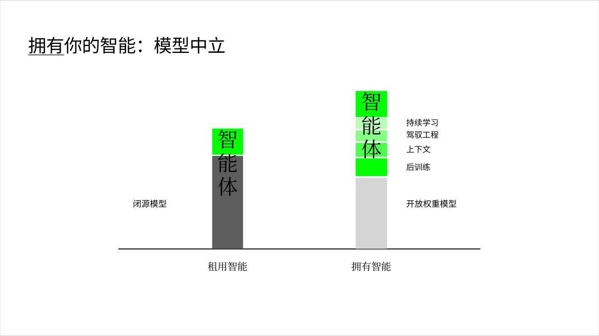
今天底层用千问可以，用 MiniMax 可以，用智谱也可以，或者灵活地在三个、四个、五个模型之间切换。这非常重要。所以最近企业一直在讲一个词，叫 model agnostic，模型中立。以前在云的时代讲云中立，你可以切换任何一朵云。现在在模型的时代，要强调模型中立。
这个问题比数据存在哪里更重要。就像前面讲的，你即使有用户数据，可能都没有 MBTI 准，因为 AI 的能力变强了。全世界数据最丰富的地方，就在模型里。你驾驭模型、把模型变成自己智能的能力，以及学到的东西是否真正属于你，这些反而比数据更重要。
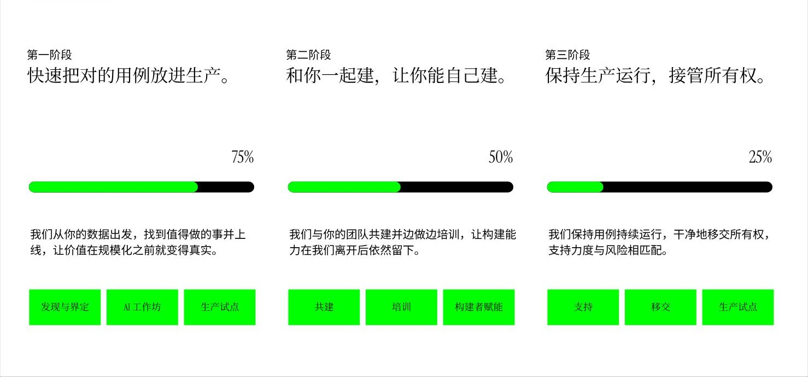
怎样把 AI 的能力迁移到企业这一侧？我举一家全球农业食品集团的例子。我们做的是这样三步：第一步，我帮你建；第二步，我们一起建；第三步，我教你建。整个系统和上面的能力，就这样慢慢地切换到企业这一侧。这件事很重要，它要通过一系列工作来实现，也需要一定的时间。
去年的时候，每一家公司都觉得装个智能体搭建平台、装个 vibe coding（用自然语言让 AI 写程序）的工具，就可以做 AI 了。今年发现问题很多。有一家企业，去年给大约 1,000 名研发人员每人配了一个写代码的 AI，今年发现效果很混乱，我们又进去帮他们重新梳理。所以这个过程还是有门槛的，但最终一定要从外部的能力变成自己的能力。
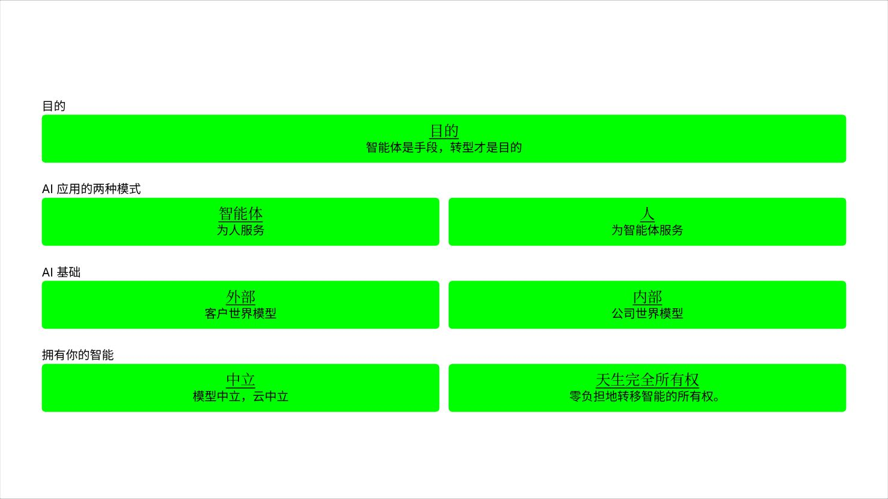
所以在所有的层次之上，还要再加一层，叫 own your own intelligence，拥有你自己的智能。模型要中立，并且从设计之初就完全拥有（full ownership by design）。也就是说，从第一天起，AI 转型项目的设计就要能够把 AI 的控制权交还给企业：企业随时可以切换模型，不会被模型裹挟，随时可以完整地迁移自己的模型和 AI 能力。
每年我会在朋友圈里找企业家们做一个不算非常严肃的投票：AI 转型到底卡在哪里？
2023 年，大家觉得最大的卡点在 AI 的基建，其实就是数据。2024 年，大家觉得最大的卡点在模型的能力。2025 年，几样都差不多。2026 年，答案是 1 : 2 : 7：模型占 1，基础设施（包括数据）占 2，人和组织占 7，70% 的人觉得卡点在人和组织。技术的卡点已经不大了：大家看自己的技术、自己的这套基础设施，都还可以，数字化也做得不错。卡点在于人和组织。
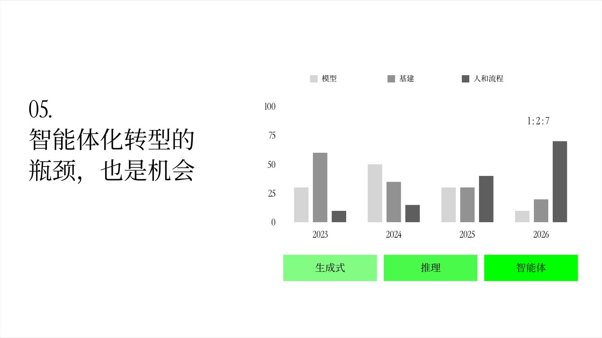
我觉得，人和组织既是卡点，也是差异化的机会。这和第一章讲的互补投入是同一个道理：技术之外的那部分，才是大头。
企业做 AI 转型有很多种方法。我想用建筑师巴克敏斯特·富勒（Buckminster Fuller）的一个观点。他说，我们往往没法正面解决一个问题，而应该找到一个新的解法，这个解法如此之好，以至于旧的问题自然而然地都按新的方法来做了。打个比方：要过一条河，我不应该教人游泳，因为游泳总有淹死的风险；我应该造一座桥，让游泳这件事显得如此过时。
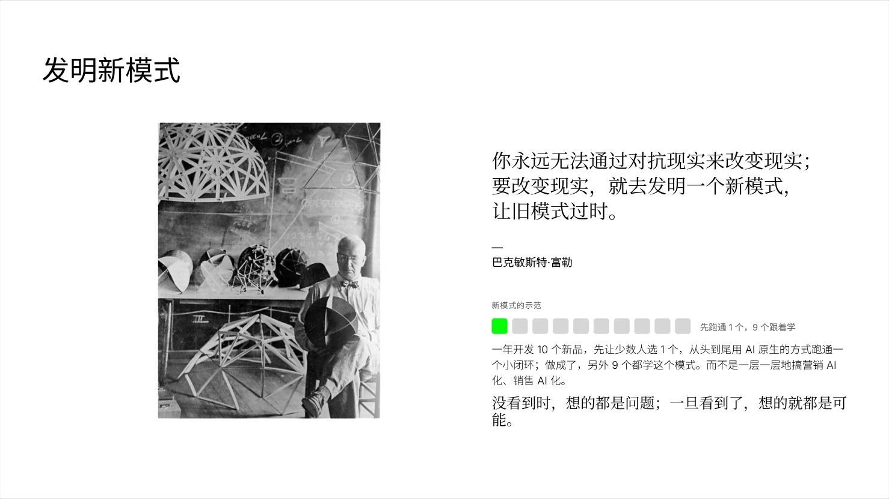
我觉得企业里的转型也应该是这样。所以我们最近做了很多实验室（lab）。我们并没有真的进到企业里，要求所有人都改成新的方法。比如最近我们和一家美妆企业合作，做一个 30 个人的实验室，用 AI 原生的方式理解消费者，就像前面那家车企那样，去做新品研发、做营销，看看能不能用 6 个月做出一个新的产品。这群人就用 AI 原生的方法工作，做出一个示范，让其他人可以学会。
比如一年要开发 10 个新品，先选 1 个，从头到尾用 AI 原生的方式来做；做好了，另外 9 个都可以学习这个模式。而不是整体上一层一层地搞营销 AI 化、销售 AI 化。用少数人跑通一个小闭环，绝大多数人都会愿意转变。大家只是因为没看到，所以想的都是问题；一旦看到了，想的就都是可能。
我们最近做的几个项目都是这样：一定要先做出来，让整个公司看到变化，而不是硬推整个公司彻底地变化，那是非常难的。
第二点，培训很重要。AI 常被说成又一次工业革命，但我觉得对人才来说，它是反工业革命的。工业革命的逻辑是分工：千行百业，每个人都有自己的分工、自己的角色，大学是这样，公司更是这样。
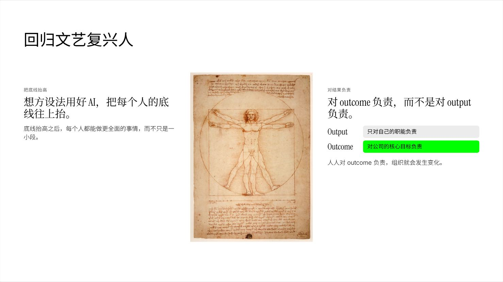
但现在，AI 能够让我们每个人的底线往上拔，每个人能干的事情更多，所以每个人能更好地对结果（outcome）负责，而不只是对产出（output）负责。产出只对自己的职能负责，结果对公司的核心目标负责。人人对结果负责，组织就会发生变化。
所以企业里人才的发现、培训和重组变得很重要，而不再只是让原来一亩三分地的角色，通过 AI 提高一点效率。组织很重要，人才的发掘和培养也很重要。
最近我看到很多企业在做一件事，叫 non-tech hackathon。黑客松原来是极客做的事情，现在很多企业在发起一种给不搞技术的人的黑客松：企业里非常愿意尝试 AI 的这群人，结合自己的需求，用一点点 AI 的方式去解决它，公司给一些激励。
去年 MIT 出了一份很引人注目的报告，说 95% 的生成式 AI 项目，投资回报都不及预期。1今年不会是这个数字了。但它还有一个发现更有意思：很多员工早就在用自己的 AI 工具，研究者称之为影子 AI（shadow AI）。这群人悄悄地用 AI 来解决问题，从而让公司看到了具体怎么用：财务的问题、法务的问题、设计的问题，怎么用 AI 真的能解决掉，而不是纯粹自上而下。
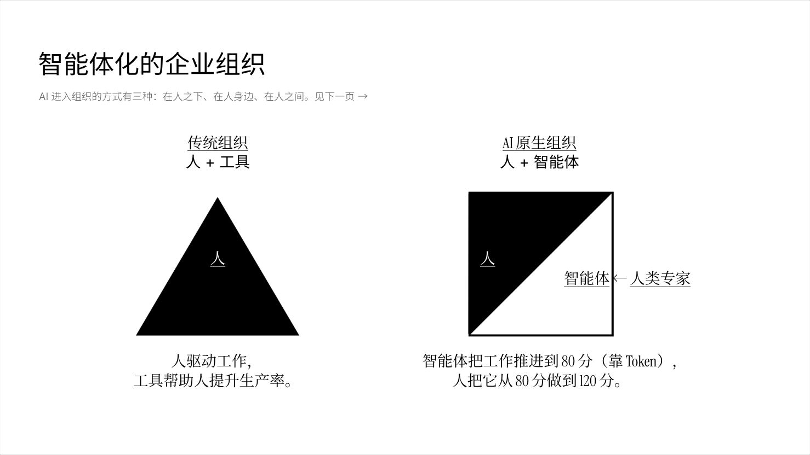
所以我们会看到组织的一些改变。我非常推崇的一点是：0 到 80 分的工作，尽量交给智能体；80 分以上的工作，尽量交给人。
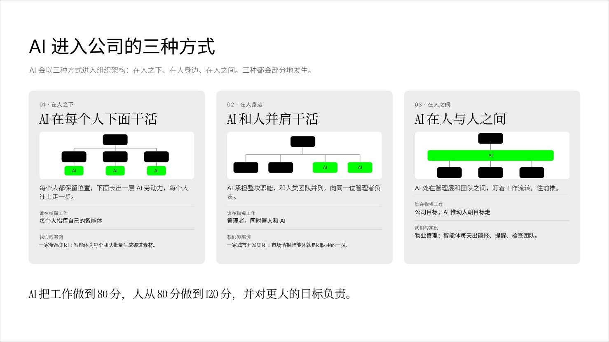
AI 进入组织的方式有三种：在人之下、在人身边、在人之间。在人之下，是每个人都保留自己的位置，下面长出一层 AI 劳动力，每个人往上走一步，比如一家食品饮料集团的智能体为每个团队批量生成渠道素材。在人身边，是 AI 承担整块职能，和人类团队并列，向同一位管理者负责，比如一家城市开发集团的市场情报智能体，就是团队里的一员。在人之间，是 AI 处在管理层和团队之间，盯着工作流转，往前推，比如物业管理的智能体每天出简报、提醒、检查团队。三种都会部分地发生。
到这里，看 AI 的这张全景图就越来越完整了：最上面是目的，然后是两种使用 AI 的模式、两个 AI 的基础，再是拥有自己智能的技术选择，最后是人和流程。
我们一直的观点是：智能体只是手段，转型才是目的，或者说，转型才是产品。
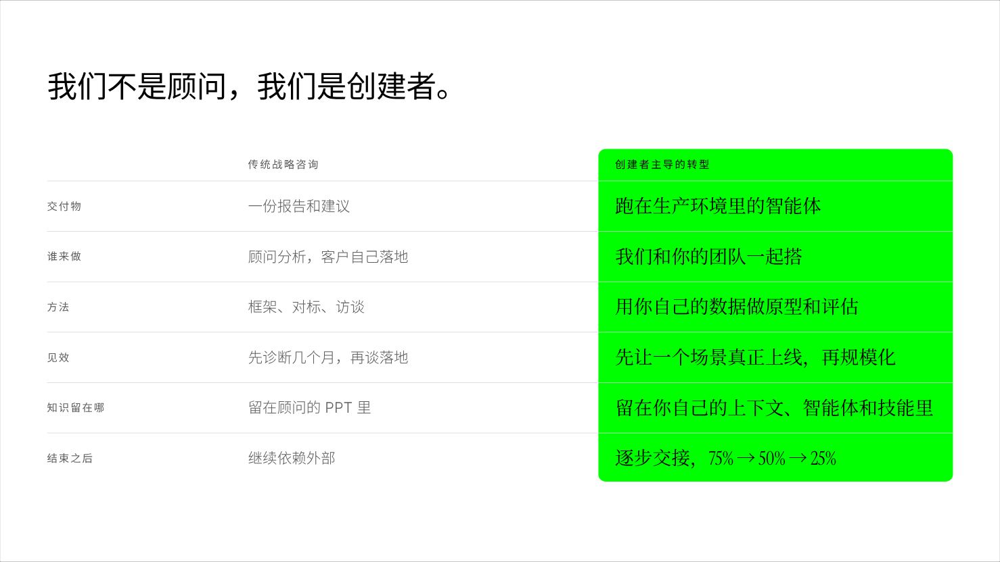
我们自己其实不是做咨询的，我们是做技术的。但我觉得在 AI 转型的过程中，我们这些创建者（builder）需要去做咨询项目。原因是，现在没有一个 AI 项目是纯技术的项目，它在很大程度上关乎一家企业的变化。换句话说，一家企业的 AI 变化，不能只靠一份演示文稿或者一个理论框架。
第一，一定要有真的跑在生产环境里的智能体。AI 不像原来的软件系统，上线以后就不变了。这些 AI 像是活的一样：你要用，要反馈，告诉它怎么变得更好，甚至要专门为它设计数据、设计流程。所以它是活的，不跑不知道。
第二，就是前面讲的从设计之初就交还所有权（ownership transfer by design）。最重要的是企业自己有这个能力，所以要一起搭。
第三，一定要有好的评估体系。没有评估，就不知道什么叫 AI 转型，也不知道 AI 应该做什么。
第四，要一个场景一个场景地做。就像富勒讲的那样，一点点做，做成了，再扩张。
第五，每做一次，都是一次上下文的积累。上下文越好，AI 的性能越好。
最后，当然是慢慢变成企业自己的能力。
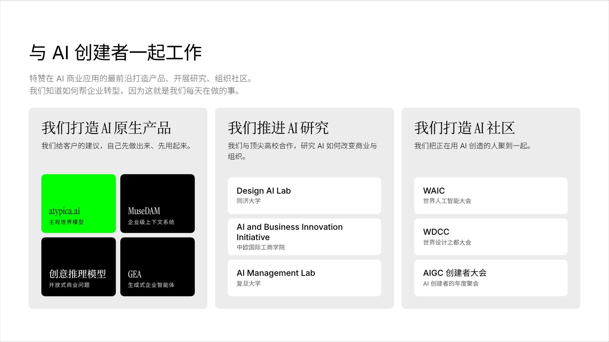
我们自己其实干三件事。第一，我们自己做 AI 原生的产品，前面讲到的用户模拟的系统、产品创新的系统，都是我们自己做的。第二，我们做 AI 相关的前沿研究：在同济偏技术研发，在中欧偏商业模式，最近在复旦做一个偏管理科学和人才培养的实验室。第三，我们做各种各样的社区，创建者和创作者的社区。
之所以讲这三件事，是因为创建者主导的转型，需要做的人自己一直在前沿。
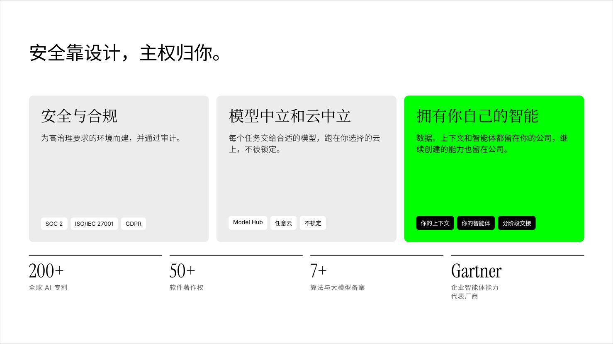
AI 转型有一些基础的原则：安全和合规，模型中立和云中立，最后是拥有自己的智能。
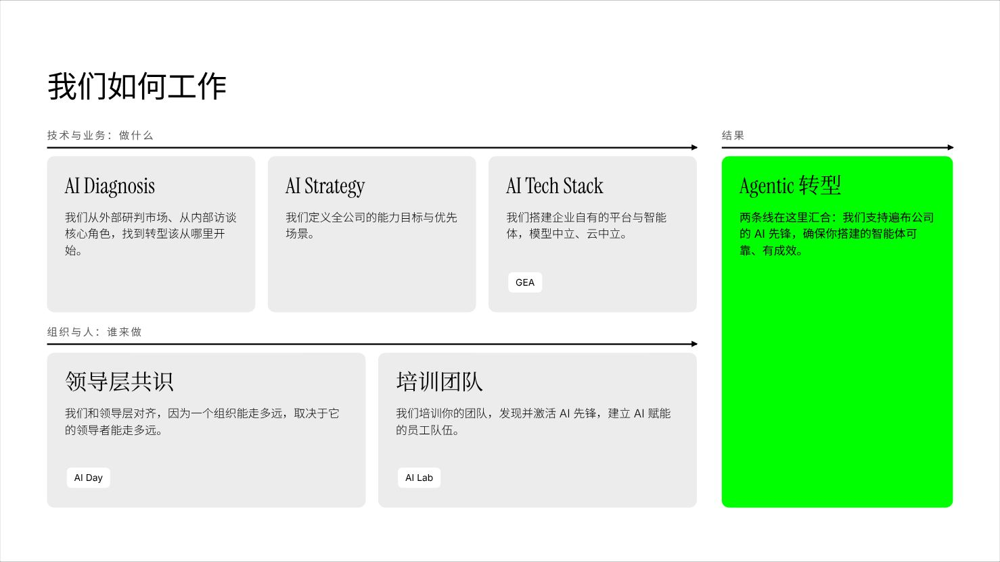
整个工作过程大概是这样：先做 AI 诊断，然后形成 AI 的策略和 AI 的技术栈。但我还是要反复强调互补投入，记得第一章讲的 1 比 9 吗？在技术之下，还要有组织和人这两样东西：领导层的共识，团队的培训。企业自己团队的投入也很重要，最后才会有 AI 转型的结果。
有一样东西其实很重要。在和很多企业的讨论里，我们讲场景讲得很多，讲问题讲得很多，讲机遇讲得很多，但讲目标讲得不够多。我一直在问：能不能有一个量化的目标？没有量化的目标，我们其实很难知道方向在哪里。
AI 的预算不是买系统，而是买能力。目标是改变工作方式（不一定第一天就改变），是沉淀知识，是让能力产生复利。
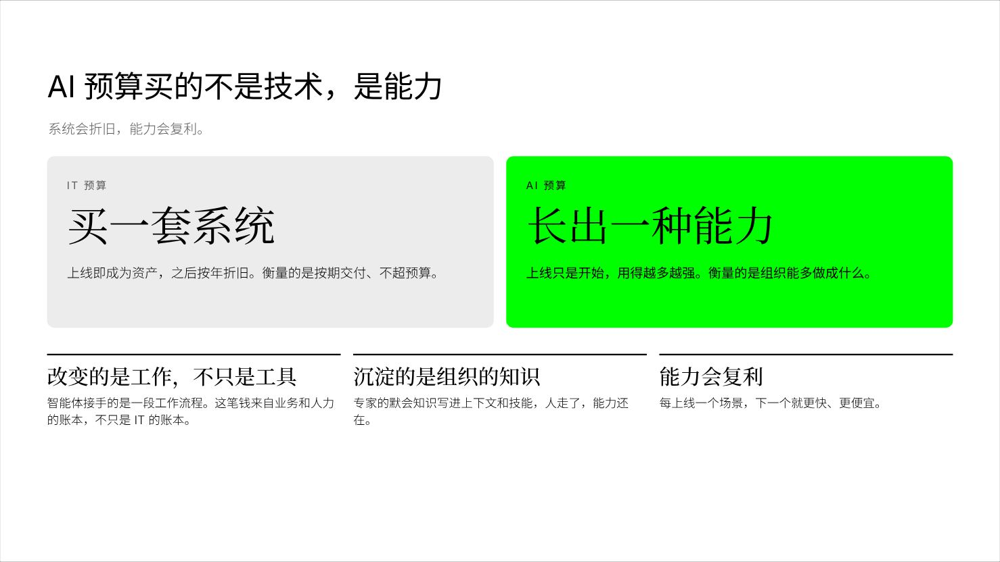
先给大家一些基本的数字。一项覆盖 1,330 家企业的调查显示，企业在 AI 上的平均投入大约占收入的 3.3%，其实不少。1换一个角度看：AI 占 IT 预算的 15% 以上，占数字化预算的 36%，占营销预算的 15.3%。2也就是说，AI 的钱分布在各种各样的业务线、各种各样的预算里。
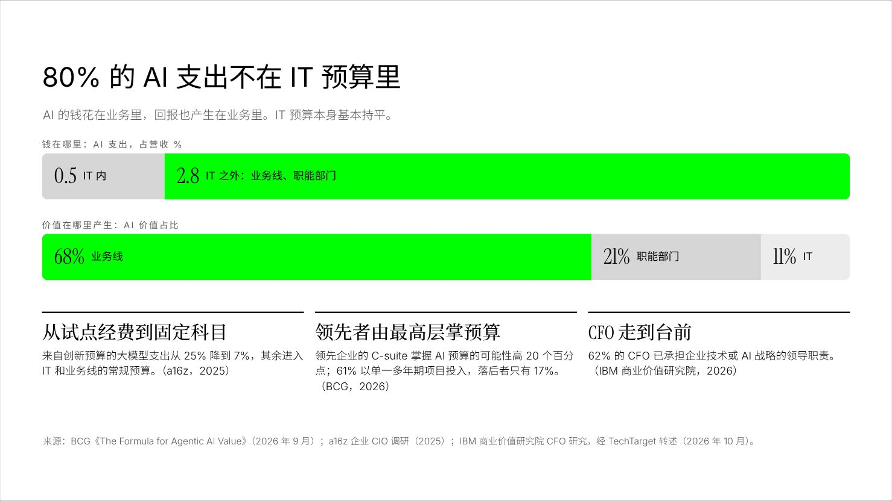
这 3.3% 里，0.5 个百分点在 IT 之内，2.8 个百分点在 IT 之外，花在业务线和人力、财务这些职能部门里，直接产生业务的结果。价值也是这样分布的：68% 体现在业务的结果上，21% 在职能部门，11% 在 IT 的基础设施。1
AI 要从试点变成固定的预算科目，就要从 IT 预算逐步延伸到业务预算。所以现在讲 AI 转型，往往是一把手工程，是整个领导层的工程，而不只是 IT 负责人的工程。现在有一个说法：如果一家企业把 AI 只当作 IT，那它对 AI 的认知第一步就错了。所以我们看到越来越多的 CFO 开始管 AI 转型，或者参与到 AI 转型里来，因为他们把 AI 当作一种投资，而不只是一种成本。
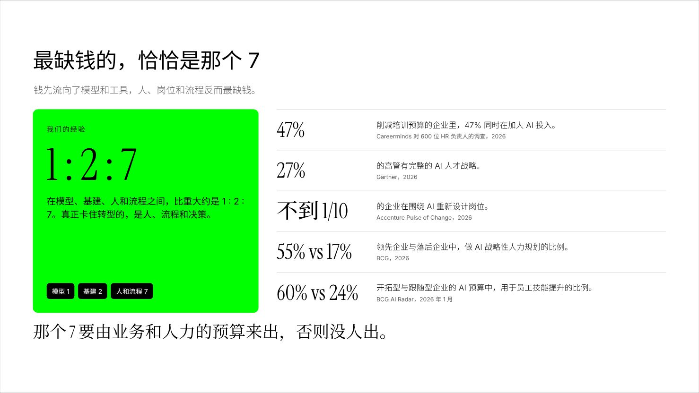
最缺钱的，恰恰是 1 : 2 : 7 里的那个 7。看几个宏观的统计：削减培训预算的企业里，47% 同时在加大 AI 投入，一边在减少对人的培养，一边在增加对 AI 的投资。只有 27% 的高管有完整的 AI 人才战略。不到十分之一的企业在围绕 AI 重新设计岗位。3
去年这个比例更少，但今年已经开始多起来了。我们已经看到一些企业开始专门为 AI 设计岗位，不是什么首席 AI 官，更多的是用 AI 做增长的岗位、用 AI 做实施部署的岗位，等等。这些新的岗位会出现。
领先企业和落后企业之间，做 AI 战略性人力规划的比例是 55% 对 17%；开拓型和跟随型企业之间，AI 预算里用于员工技能提升的比例是 60% 对 24%。4所以很多投入应该放在互补投入上，也就是 7 这个维度上。
这里大概有四个口袋。第一个是技术的底座，前面已经讲过了。第二个是各种场景的智能体。智能体一定是从场景出发的，它不是在某套 IT 系统上再长出来的一个系统，而是解决具体商业问题的 AI，所以一定要有明确的业务线。第三个是人和能力的提升。最后是治理与变革。这些都很需要企业的管理者们参与进来。
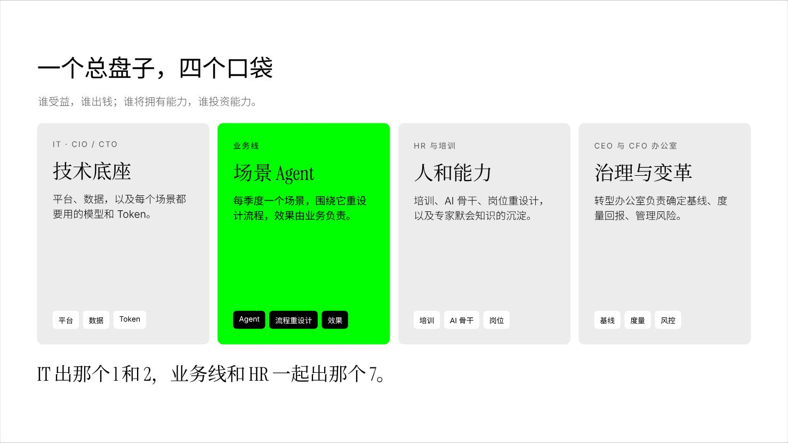
钱花在哪里？AI 投入是个很宽泛的概念，大致可以拆成几块。做咨询、做开发，这些是人天，也就是按投入的人和天数计费。有很多基座型的产品是订阅，不用自己建，因为这些产品发展很快，比如上下文系统、约束框架系统，企业自建的成本极高，维护起来技术变化又极快。第三部分在人和变革上。第四部分，当大家开始用 AI，尤其是有了主动的智能体之后，token 的消耗就会上来，这时候就会有这个成本。最后是咨询和治理：永远要想清楚做一个什么样的项目。
一句话：谁受益，谁出钱；谁将拥有能力，谁投资能力。IT 出那个 1 和 2，业务线和人力一起出那个 7。
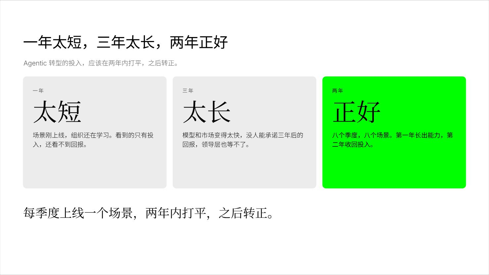
ROI 怎么衡量？这是我自己的感觉，也是和很多企业家朋友、企业高管聊下来的：一年太短，三年太长，两年正好。一年就要求回本，建设周期可能太短了。三年呢，可能等不及，因为 AI 变化很快。所以两年正好。
我们和客户合作时，会以季度为单位来规划：每个季度一个场景，连续做两年。从数据看，好的企业可能 11 个月就见到成效，落后的企业 17 个月也见到成效了。1所以只要做，在一个时间范围里就会有成效。
而且用例会越来越多，用例也是会迭代的。就像前面介绍的产品创新的智能体一样：今天做的是一个简单的用例，明天三个简单的用例就可以串成一个复杂的用例。这些东西都会逐步积累，只要做。
每家企业其实都会有这个讨论：AI 转型对我们的价值到底是什么？我说得直白一点，因为我自己的公司也要增长。什么叫增长？增长就是三样东西：要么增效，要么增收，要么“增肥”。用英文说：efficiency，growth，capability。
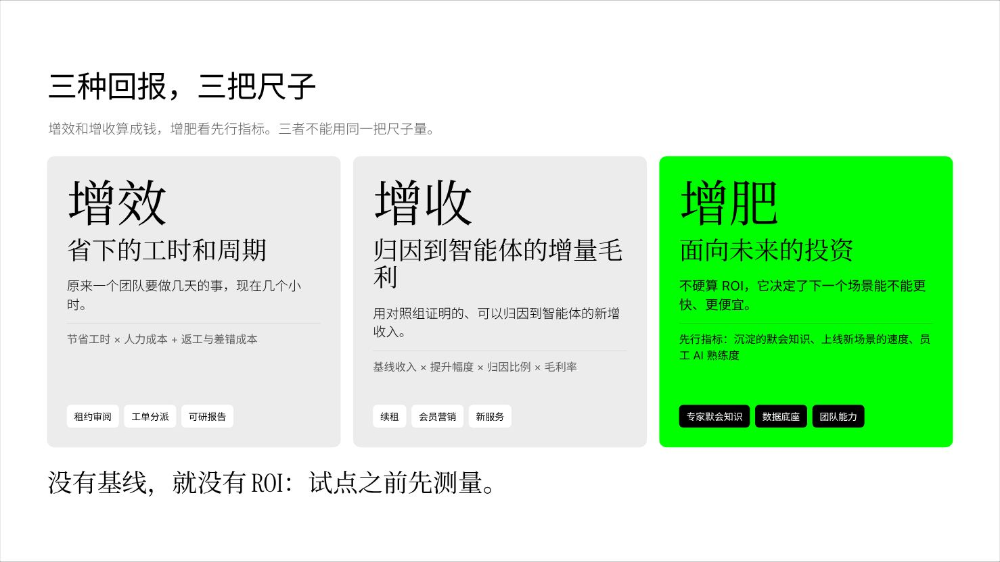
增效是什么？就是省，或者提高效率：省时间，缩短周期。增收是什么？能不能找到新的业务增长的机会。增肥是什么？我们有没有机会为未来做投资：为未来的人才、未来的产品、未来先进的管理方式做投资。
我们一定要有一个明确的目标值，才会有 AI 往哪里走的选择。没有基线，没有 ROI，其实就很难做转型。所以有三个非常高层的问题值得讨论：钱从哪里出？速度要多快？回报是什么？
为了让这个问题更直观，我举一家全球制药企业的例子。它的目标听起来很有中国特色，但其实是全球总部提的：四个 3。第一个 3 是时间：三年内，一线业务人员的生产力提高 3 倍；中台用三分之一的人完成同样的中台工作；关键决策层高质量决策的速度提升 3 倍。最后这个 3 非常难衡量，但前面两个 3 非常容易看到。
为此，三年内他们有五条线：营销、销售、医学（其实就是对医生的营销）、研发和内部管理。这五条线都要覆盖三个基本内容：业务流程的重新编排，底层技术架构和数据架构的调整，组织智能体的设计与搭建。
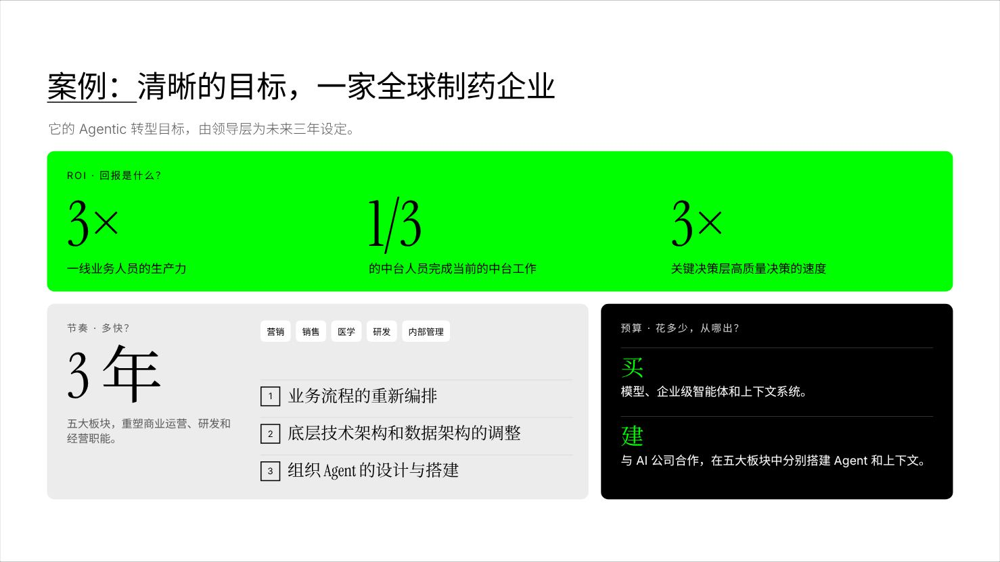
然后，他们决定什么买、什么建。买什么？买模型，毫无疑问，没有人会自己训模型；买企业级的智能体架构，买上下文系统。自己建什么？智能体自己建，上下文的内容自己建。系统是买的，但上面的智能体和上下文是自己建的，这些就是可以带走的智能。
我常被问到：写出这样的目标，哪个环节的讨论最难、争议最多？据我了解，有两个讨论最花时间。
第一个是：到底写 3 倍，还是 2 倍、4 倍？这是一个很大的讨论。他们之所以选 3，就像一年太短、三年太长、两年正好一样：写 5 太激进，写 1 没有挑战，所以写 3。最后其实是一个很感性的选择。但 3 传递的信号是：不是今天涨一点点，也不是今天要变成完全不同的另一家公司，而是我们要竭尽全力把眼前做好。
第二个是怎么落地：到底是买还是建？买的意思是，要不要买一套成熟的解决方案；建的意思是，哪些东西自己建。最后他们选择的是和 AI 公司一起建，按照这几条主线来建。
从“要不要做”，到“做的目标是什么样子”，这一步越具象，转型就越容易开始。
前面七章讲的是为什么和是什么。最后一章讲从哪里开始：从 AI 诊断开始。
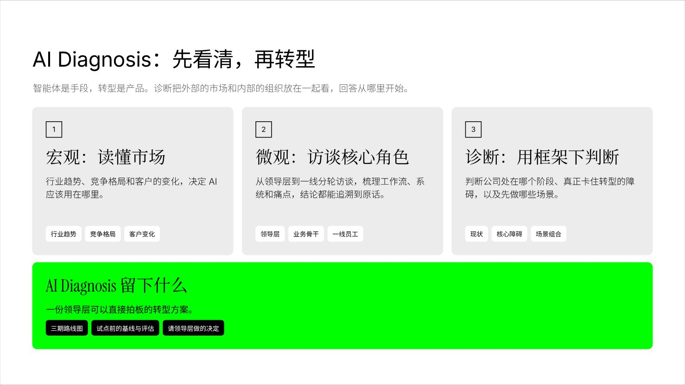
我们做诊断，第一是从外部读宏观的市场，第二是在内部做很多访谈，访谈核心的角色，再用我们的框架做分析，找到转型应该从哪里开始。诊断之后，是定义全公司的能力目标和优先场景，也就是 AI 的策略；再搭建企业自有的平台和智能体，也就是 AI 的技术栈，模型中立，云中立。
但我还是要反复强调互补投入。技术这条线之外，还有组织和人这条线：先和领导层达成共识，因为一个组织能走多远，取决于它的领导者能走多远；再培训团队，发现并激活 AI 先锋。两条线汇合在一起，才是智能体化转型。
诊断时，我们会围绕六个问题去访谈和梳理：AI 在企业里是什么角色？价值怎么算？产出的质量怎么衡量？数据安全怎么处理？组织和人会怎么变？谁来推进？每个问题，企业大致处在四个阶段中的一个。
从一个偶尔使用的工具，到流程里的同事，再到改变组织与业务的方式。领先的企业，是 AI 跑在业务流程里，改变工作怎么分配。麦肯锡 2025 年的调查显示，AI 高绩效企业从根本上重构工作流程的比例，几乎是其他企业的三倍。当然不同行业各有差异：如果你在一个很卷的消费品市场，就要往更远的阶段多想一些。
这是我自己非常在意的。认知上，大家都可以通过刷短视频来补充；但价值怎么算，和每家企业紧密相关。第一个阶段叫先跟上再说：大家都在讨论上 AI，但对 AI 未来收益的评估并没有清晰的模型，所以先做一两个场景。第二个阶段是省时间、体感好：AI 把一段时间缩短了，大家体感就好了。第三个阶段是场景有基线和指标，有一定的基准。第四个阶段，是公司级的目标拉齐和节奏。
从第三阶段走到第四阶段，往往需要管理者来推动：要有一个清晰的方向感。不管是四个 3 还是别的什么，不能只是定性，一定要有相应的量化。领先的企业是先定基线和目标，再选场景，用公司级的目标统一大家对节奏的认识。
第一个阶段是用准了才用，不准就不用，这很正常。第二个阶段是靠个人把关：会用 AI 的人，用得就是比别人好。我有一次和一家咨询公司的高级合伙人聊，他就觉得自己用 AI 比下面的年轻人用得好得多，虽然是同一个工具。个人的能力决定了 AI 的性能。第三个阶段高级一点，靠上下文与标准：企业能不能把 AI 运行的环境做好？这个环境就真的是环境，就像我们的小区环境一样，只是现在小区里的人都是智能体。第四个阶段是持续评估的反馈闭环。
现在的人工智能有两种思路。一种是人把工作流程写死，告诉智能体第一步、第二步、第三步、第四步做什么。另一种是把边界划好，让 AI 自由发挥。越来越多的做法偏向第二种，因为 AI 越来越聪明，就像小孩一样：如果这个小孩没什么天赋，你要告诉他一二三；如果这个小孩有天赋，你只告诉他什么不要做，剩下让他自由发挥。所以上下文和标准变得很重要，迭代和持续评估的机制变得很重要。
领先企业的质量，取决于公司给 AI 的上下文和标准。这是公司要建设的能力，而不是靠每个人的自觉。如果每个人用自己的智能体，那些好的对话、好的经验，是沉淀不到公司的，也就不会成为公司的能力。
第一个阶段是禁止输入，干脆不用：既然不知道安不安全，就不要用了。第二个阶段是个人自行用外部工具：公司没有相应的工具，大家就自己拿外部的 AI 来处理公司的信息。大家可以默认自己的下属都是用 AI 写东西的，现在我也默认我的学生都是用 AI 写论文的，他要是写错一个字，我反而会觉得很珍惜。怕的是你不知道他用了多少外面的工具，信息其实已经带出去了。第三个阶段是建一个可控的环境，很多企业的 IT 团队在这件事上花了很多精力。第四个阶段更智能一些。我们最近服务一家安全等级很高的科技企业，它的痛苦在于，因为安全等级太高，所以什么都不能用，等于自己把自己的武器降级了。我们在帮它做按风险分级放权的体系：比如做用户洞察，数据本来就是从外面进来的，为什么不能出去？但如果是核心产品的用户测试，产品概念是不能出去的。所以有些可以在外面，有些在里面，做一个更好的分级：有些方便优先，有些安全优先。
领先的企业提供可控的企业环境，让大家敢用、放心用，而不是在外面悄悄用。
有人是担心的：我是不是会被优化？每家企业的文化各不相同，有些企业要制造不安全感，有些企业要制造安全感。我自己的公司选择创造安全感，所以做了很多培训。很多人说年轻人更 AI 原生，我觉得不对：我是大学老师，我的学生，你不教他，他也不会自己变成 AI 原生。所以每个人都有一个改变的机会。我父亲七十多岁，他的 token 用得比我还多。只要有意愿，就有机会变得更 AI 原生。
这个问题的四个阶段，是从担心被优化，到培训个人技能，到岗位和流程随之调整，再到与人才机制、职业路径挂钩，把 AI 和一个人的职业发展、和组织联系起来。一家企业如果有清晰的 AI 愿景，也能吸引行业里最优秀的人才加入。
最消极的方式是被裹挟、被迫做，等上面定。第二个阶段是各个部门提需求、做试点，这是自下而上的。第三个阶段是形成能力、成体系。第四个阶段是上下联动，逐步带动。
这本书里我多次讲到，管理者需要有很强的愿景，这都是自上而下的。但 AI 也有一个很重要的维度是自下而上的。所以我一直觉得最好的方式叫上下联动：既不是一个大规划，也不是下面悄悄地做，两者可以有机地结合在一起。很多场景事实上都是大家试出来的，但要指向公司希望发展的方向。
所谓自上而下，意思是要跨部门。只有跨部门的事情，才需要自上而下，也只有老板们能解决。
自下而上，是你单点有一个非常痛的问题，能不能自己想办法用 AI 解决，用什么工具都可以。比如报销的问题，在我们公司就是财务的同事自己解决的。我们每个月都有黑客松，给激励，给徽章，年底折算成绩效。又比如我们去年大概写了 500 份产品研发文档，但业务的同事永远觉得研发给的“弹药”不够。原来要有专人把产品研发文档翻译成营销材料，现在 AI 来做这件事，而且是业务的同事自己开发的。这种情况我们非常鼓励。
还有一类 AI 是真的增肥型的，没有短期的 ROI 衡量，比如知识的积累。这种开放性的问题要持续探索，我会建议用 AI Lab 的形式：不用很多投入，但要持续去试，因为每天都可能有新的技术可能性、新的思路。
即使是很成熟的公司，也都有一个过程，叫先发散再收敛。它不会第一天就收敛，第一天收敛很可能收敛错了。如果讨论规划图讨论得太久，而自己试错或者试对的过程滞后，这张图就会变成纸上谈兵。
所以两件事都重要。有一些快速见效的事，大家想想都应该做，即使想不清楚也值得做，就先做着，两边同时跑。这也是为什么我们每次都说，AI 转型既是技术，又是组织；一旦到了组织，到了流程，就是管理层的事情。
从哪里开始？我的建议是先做加法，再看什么地方做减法。从企业最有特色、最在意的地方入手，比如对用户的理解，让 AI 先去放大它；现有的团队会觉得是被支持，而不是被替代。等能力长出来了，再去看哪些流程可以减。
这就回到了序言里的那句话：底线是自动化，上限是差异化。
商学院里现在最热的两个话题，一个是出海，一个是 AI 原生企业。大家都在讲 AI-native，我也不能免俗，就从走向 AI 原生企业讲起。
但我不想只讲口号，也不想只讲经验，因为其实大家都还没有经验。去年我在《哈佛商业评论》上写过一篇关于 AI 原生组织的文章，有人来问我：AI 原生组织到底怎么做？我说，因为我们的客户都还是人，所以我们自己的组织也不够 AI 原生。只要你还在跟人打交道，你的业务形态还在服务人，似乎就都不够 AI 原生。所以 AI 原生是递进式的。
如果简单地分，企业的智能化大概可以分为四个阶段。
第一个阶段叫 AI 探索（AI Exploration）。比如今天我用豆包试一下，明天用千问试一下，后天又用 Claude Code 写点东西。每一件事情都是自发的。
第二个阶段叫 AI 赋能（AI Empowered）。现在很多企业走到了这一步，公司集体来做。外企一个很大的特点是给每个人装一个 Copilot，民企一个很大的特点是给每个人装一个国产的办公 AI 助手。
第三个阶段叫 AI 原生（AI Native）。意思是：你的公司、你的角色、你的岗位、你的工作流程，有没有基于 AI 重新设计？很多企业还没有做到。准确地说，不是没有做到，是还没有开始做。他们还没有想过，有了 AI 的参与以后，组织应该怎样变化。
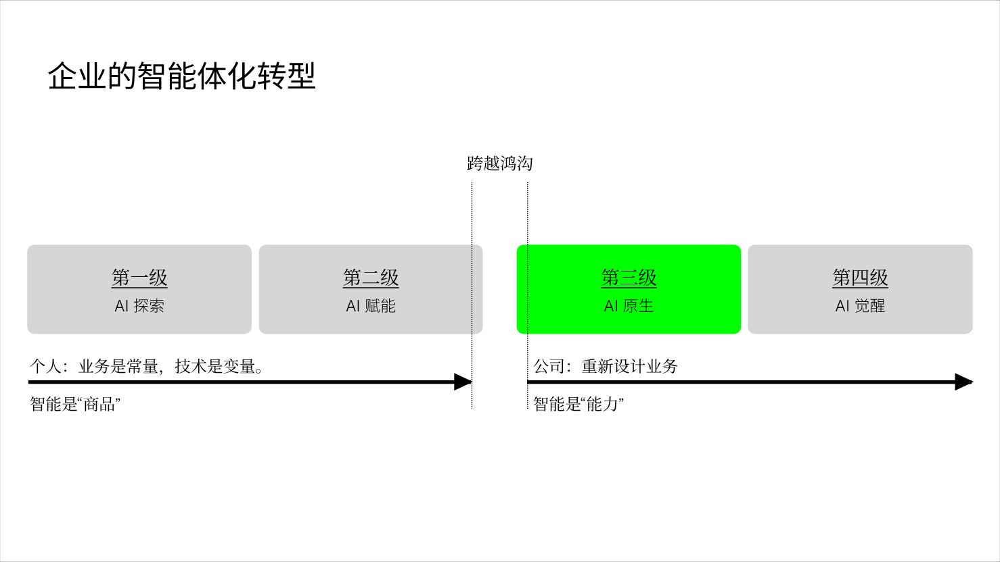
第四个阶段叫 AI 觉醒（AI Awakened）。这是一种全新的状态，这里先不展开。
前两个阶段，是把业务和现状当作一个常量，不能变；工具是一个变量，帮我们把原来的事情做得更好。后两个阶段，开始基于 AI 重新设计我们有什么业务、有什么流程。这两者之间有一道很大的缝隙，不会自然而然就过渡过去，中间要付出努力。这个努力有多大？是一个诺贝尔经济学奖级别的努力。
每一代技术变化，都会出现类似的挑战。每个人都用了 AI，为什么公司整体还没有变成 AI 原生？每个人都用了电脑，为什么公司还没有变成数字化？每个工厂都用了电动机，为什么效率没有提升？
1987 年，诺贝尔经济学奖得主罗伯特·索洛提出了一个悖论，后来被称为“索洛悖论”：计算机时代随处可见，唯独不见于生产率统计。1计算机随处都能看到，企业的财报上却没有体现。
今天的 AI 也是这样。OpenRouter（一个汇集各家大模型的调用平台）上，智能体消耗的 token（模型处理文字的基本单位，可以理解为 AI 的用量），已经远远超过人。2026 年 2 月 6 日，智能体的 token 第一次超过人，现在每天 7.3 万亿，涨了 14 倍。2AI 用得越来越多，可生产率在哪里？
1990 年，斯坦福大学的经济学家 Paul David 写了一篇论文，叫《发电机与计算机》。3他讲的是计算机时代的问题，就像我们今天讲 AI。而要看清计算机时代，他回头去看上一代：电气革命。
电气革命时代有同样的问题。电动机出现的时候，所有的工厂转眼之间都装上了，从蒸汽机换成了电动机。但要再过 30 年，工厂才按电动机的逻辑重新设计。
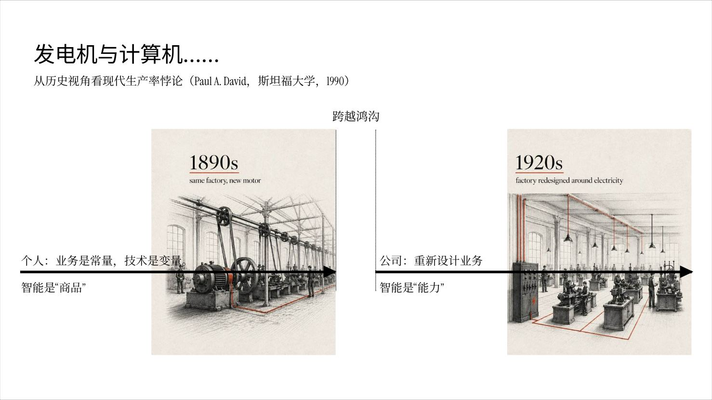
区别在哪里？一个蒸汽机工厂的核心，是中间那台蒸汽机。蒸汽是整个工厂的能源，所有的机器都围绕蒸汽的管道来排布。换成电动机，只是把蒸汽机换成了电动机，整个工厂的格局并没有发生变化。直到 30 年以后，老一代的工厂都被淘汰了，要设计新工厂的时候，大家才开始按照电的逻辑重新设计工厂。
电的逻辑是什么？就像一台电脑，插上电就能随处挪动。如果接的是蒸汽，就只能接在中间那条管道上。有了电，每一台工具都可以随处插电，电线可以随便排布。我们再也不用按照能量去安排平面，而可以按照工作流去安排。所以在20 世纪初，出现了很多现代管理学的起源：泰勒主义、福特主义、流水线。现代管理的起源，事实上是因为电动机让我们可以按照工作流程重新排布平面。
今天也是一样。我们用数字化的方式，在电脑上加上了智能。下一步，是怎样以智能为中心，重构生产关系。这个过程在电动机的时代花了 30 年，在电脑的时代至少花了 10 年，在 AI 的时代也不会马上自然变过去。效率不会自然而然提高，组织也不会自然而然改变，这中间有一场转型要做。
要走到第三个阶段，光靠技术投入是不够的。斯坦福大学的经济学家 Erik Brynjolfsson 讲过一个很重要的概念，叫互补投入（complementary investment）：我们今天在 AI 技术上投入一分，可能就要有九分投入在和它相匹配的组织变化、系统重构、流程重塑和激励上。这是 1 比 9 的关系。
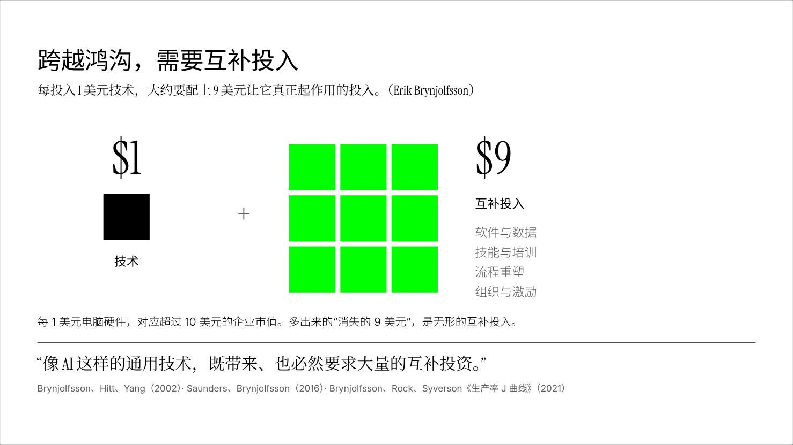
Brynjolfsson 把这件事算成了一个数字。他和 Hitt、Yang 研究了一千多家大企业：每多投入 1 美元计算机，企业市值多出 10 美元以上；其他有形资产，投 1 美元大约只多 1 美元。4后来他和 Saunders 追问：多出来的那 9 美元是什么？答案是软件、培训、流程重塑这些看不见的互补投入。5
我们不能指望在每个人的手机和电脑上花钱买了 token，整个组织就会自然而然地变化。生产关系的改变需要互补投入。往往我们只看到显性的技术投入，看不到隐性的各种成本。没有两边同时投入，就不会有所谓的转型出现，只会是每个人多了一个 AI 助手。
为什么一讲到 AI，我就强烈地想避免把它只当成一个技术问题？因为做生意从来都不只是技术问题。有最先进的武器，不代表就能打胜仗。我最近特别着迷于长征的历史，你会看到，不是有了飞机大炮就能打胜仗。很多东西是要和技术互补的。1 比 9 是美国的比例，我觉得中国企业做不到 1 比 9，但至少也得有 1 比 1、1 比 2、1 比 3。
Brynjolfsson 在《生产率 J 曲线》里说得更直接：“像 AI 这样的通用技术，既带来、也必然要求大量的互补投资。”这些投资前期看不见，生产率会先往下走一段，再翻上来。6
所以第一章我希望得到的结论是：我们今天用 AI 的目的（purpose），不只是让大家多一个智能体、多一个 AI 工具。这些只是手段。目的是转型：从 AI 探索走到 AI 赋能，让每个行业、每个部门、每个角色都能被 AI 赋能；然后试着去探索能不能变成 AI 原生。有些流程、有些角色、有些问题的解法，也许可以先走到 AI 原生。
转型要从哪里开始？下一章讲 AI 转型的商业底座：一个不停理解外部用户的模型，和一个不停理解企业内部的模型。
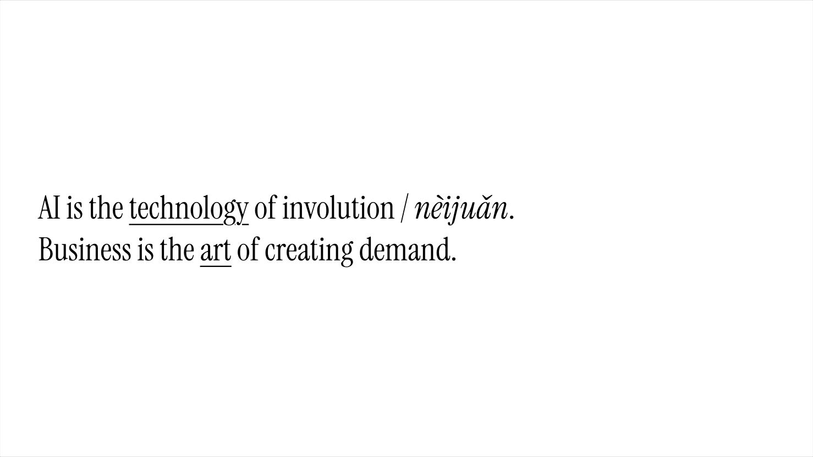
Every technology’s instinct is to compete on the supply side, and the competition only gets fiercer. The Chinese have a word for this, neijuan, involution: ever more effort for ever less gain. AI is involution squared. But the heart of business is still creating demand. I think the two complement each other. No great company today became great by squeezing supply alone. Each became great because it won a group of customers or users who love it. So business may be what rescues AI from involution, and keeps the world full of imagination and good things.
Everything that appeared over the past three years we simply call AI, and we often lump three generations together. In fact these are three entirely different generations of AI.
Three years ago we were excited because AI could talk, draw and make music. We called it generative AI. The AI of that time was like Wei Xiaobao, the glib hero of Jin Yong’s novel, who always has a comeback but is not always reliable: whatever you asked, it had an answer.
Two years ago AI learned to think. Ask it a question now and it reasons before it answers. We call this chain of thought. The answer no longer comes off the top of its head; it thinks first, then speaks.
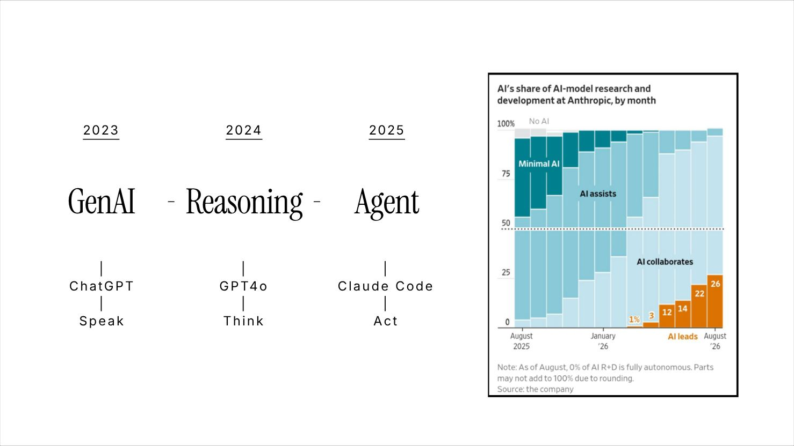
A year ago a new generation arrived, led by Claude Code. It does two things: it writes code and it operates a computer. Think about white-collar work. It is mostly operating a computer, or using some kind of “code” to solve a problem, whether computer code or the rules of management. In other words, over the past year AI started doing the work. And AI at work is moving from assisting (AI assists) to leading (AI leads). In fields such as mathematics, protein design and chemistry, we now see automated research (auto research), with AI producing research results on its own. AI is also starting to produce business results on its own, moving from operating a computer towards making decisions.
So the AI this book is about should not be only the first kind, nor only the second. It should be the third: an AI that acts. I often joke at my company that every job done sitting down will be replaced, and that the day may come sooner than we think.
Every company comes to AI from a different angle, but the floor is always automation: higher efficiency. The ceiling should be to amplify what makes each company different.
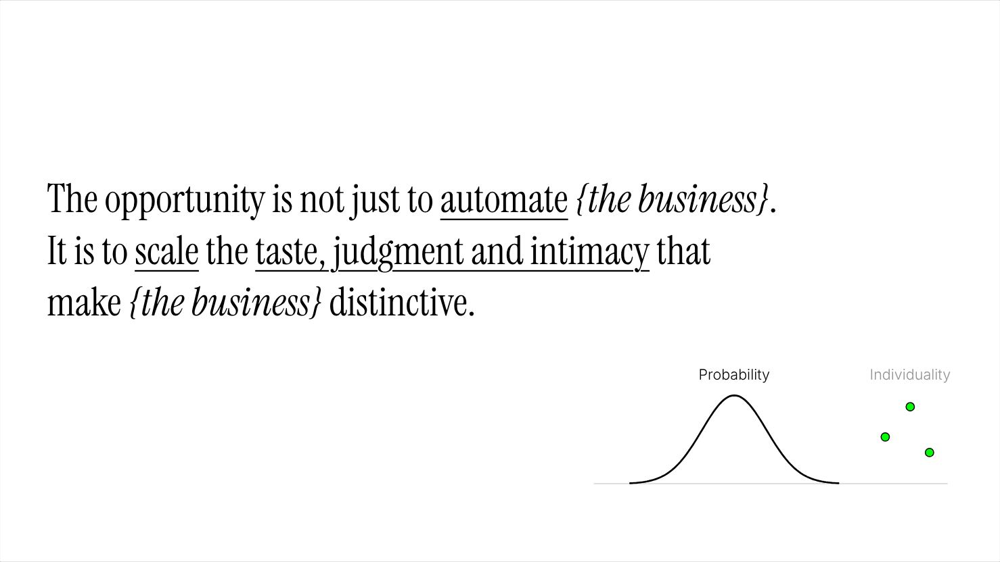
Call it a large language model or call it AI, its instinct is probability. Ask it a question and it gives you the most probable answer. What is one plus one? Most probably two. But many business decisions, especially in distinctive businesses, do not follow the most probable path. They follow differentiation, the improbable path. So if we bring AI into our own industry, we should not let it drift towards the probable. We should push it towards the individual: how to amplify what is special about each of us, and about our company.
The eight chapters that follow start from here.
The two hottest topics in business schools today are going global and the AI-native company. Everyone talks about being AI-native, and I am no exception, so this book starts there.
But I don’t want to offer slogans, and I can’t offer much experience, because nobody really has it yet. Last year I wrote an article on the AI-native organization for Harvard Business Review, and people asked me how to build one. My answer was that our customers are still people, so our own organization is not fully AI-native either. As long as you deal with people and your business serves people, you are probably not fully AI-native. AI-native comes in stages.
Put simply, a company’s journey with AI has four stages.
The first is AI exploration. Today I try Doubao, tomorrow Qwen, the day after I write something with Claude Code. Every step is spontaneous.
The second is AI-empowered. Many companies are here now, and they do it as a company. Multinationals give everyone a Copilot; Chinese private companies give everyone a home-grown AI office assistant.
The third is AI-native. Have your company, your roles, your jobs and your workflows been redesigned around AI? Most companies have not done this. More precisely, they have not started. They have not yet asked how the organization should change once AI takes part in the work.
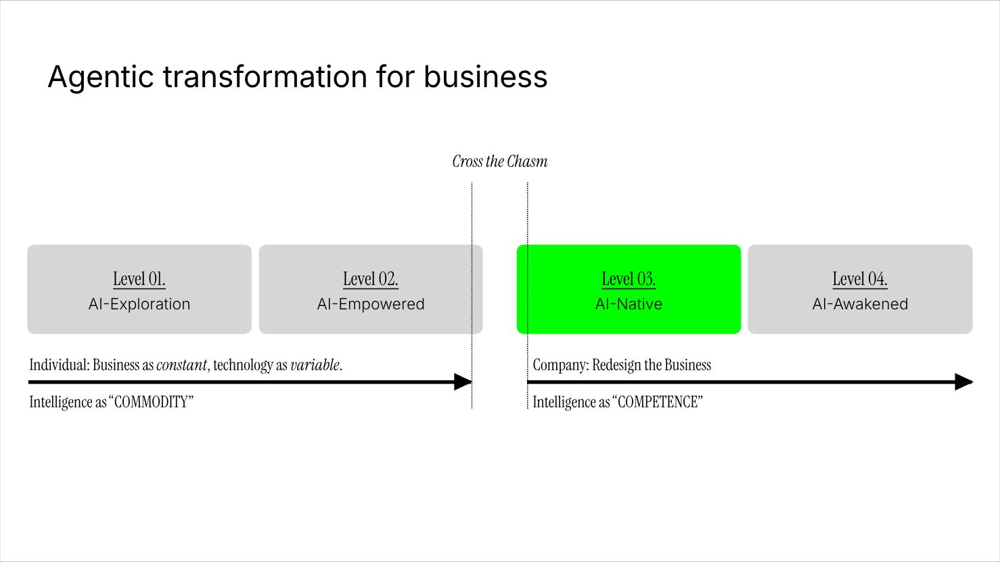
The fourth is AI-awakened. That is something entirely new, and I will not go into it here.
The first two stages treat the business as it is as a constant that cannot change, and the tool as a variable that helps us do the old things better. The last two start to redesign, around AI, what the business is and how its processes run. Between them lies a wide gap. Companies do not drift across it; it takes effort. How much effort? Effort on the scale of a Nobel Prize in economics.
Every generation of technology brings the same challenge. Everyone uses AI, so why hasn’t the company become AI-native? Everyone used computers, so why didn’t the company become digital? Every factory installed electric motors, so why didn’t productivity rise?
In 1987 the Nobel laureate Robert Solow put it in one sentence, later called the Solow Paradox: you can see the computer age everywhere but in the productivity statistics.1 Computers were everywhere except in the financial results.
AI looks the same today. On OpenRouter (a platform that routes requests to many different AI models), agents now consume far more tokens (the basic unit of text a model processes; think of it as a measure of AI usage) than people do. On 6 February 2026, agentic tokens overtook human ones for the first time. Today they run at 7.3 trillion a day, a fourteen-fold rise.2 AI is used more and more. So where is the productivity?
In 1990 the Stanford economist Paul David published a paper called “The Dynamo and the Computer”.3 He was writing about the computer age the way we write about AI today. To understand it, he looked back one generation, to electrification.
Electrification had the same problem. When the electric motor arrived, factories installed it almost overnight, replacing the steam engine. But another thirty years passed before factories were redesigned on the logic of the electric motor.
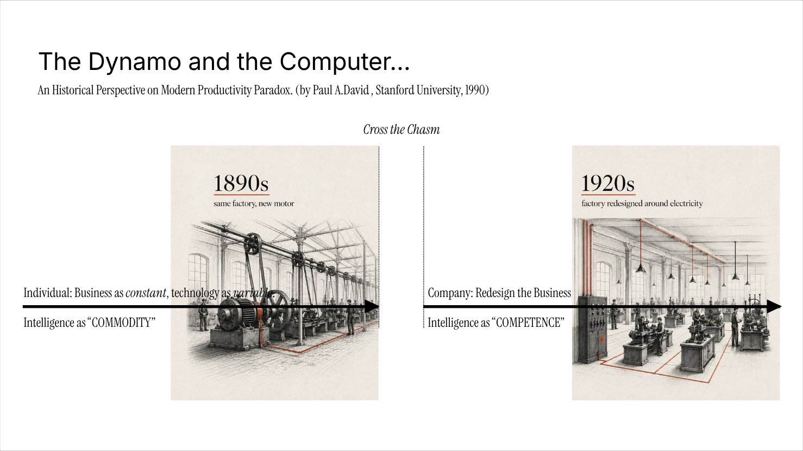
What was the difference? In a steam-powered factory the engine sat at the centre. Steam was the energy of the whole plant, and every machine was arranged along the shafts and belts it drove. Swapping the steam engine for an electric motor changed the engine, not the layout. Only thirty years later, when the old factories had been retired and new ones were being built, did people start designing factories on the logic of electricity.
What is the logic of electricity? Like a laptop: plug it in and you can move it anywhere. Every machine can plug in wherever it stands, and cables can run anywhere. We no longer had to lay out the floor around the source of energy; we could lay it out around the flow of work. That is why the early twentieth century saw the origins of modern management: Taylorism, Fordism, the assembly line. Modern management began because the electric motor let us arrange the floor by workflow.
It is the same today. We have added intelligence to the computer, digitally. The next step is to rebuild the relations of production around intelligence. With the electric motor this took thirty years; with the computer at least ten. With AI it will not happen by itself either. Productivity will not simply rise and the organization will not simply change. There is a transformation to be made.
Spending on technology alone will not get you to the third stage. The Stanford economist Erik Brynjolfsson has an important idea for this: complementary investment. For every unit we put into AI technology, we may need nine units in what makes it work: organizational change, rebuilt systems, redesigned processes, new incentives. One to nine.
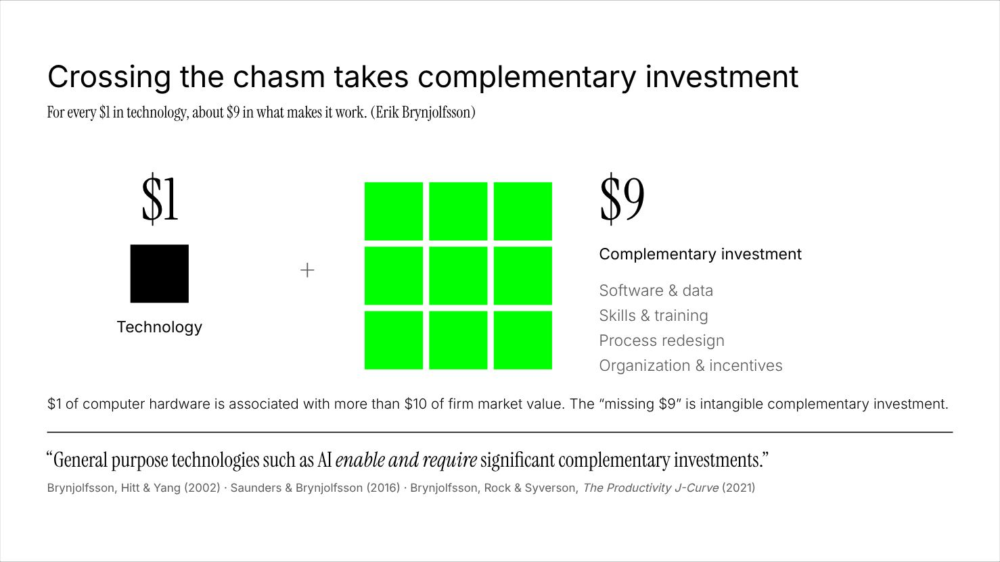
Brynjolfsson put a number on it. With Hitt and Yang he studied more than a thousand large firms: each extra dollar of computers came with more than ten dollars of market value, while a dollar of other tangible assets added about a dollar.4 Later he and Saunders asked what the extra nine dollars were. The answer: software, training and process redesign, complementary investments nobody sees.5
We cannot expect the whole organization to change just because we have paid for tokens on everyone’s phone and laptop. Changing the relations of production takes complementary investment. We tend to see the visible spending on technology and miss the hidden costs around it. Without investment on both sides there is no transformation, only an AI assistant for everyone.
Why do I resist treating AI as a technology question? Because business has never been only about technology. The most advanced weapons do not guarantee victory. I have been reading a lot about the Long March lately, and it shows that planes and artillery alone do not win wars. Much has to complement the technology. One to nine is the American ratio. I don’t think Chinese companies can reach it, but they need at least one to one, one to two, one to three.
In “The Productivity J-Curve” Brynjolfsson says it plainly: “General purpose technologies such as AI enable and require significant complementary investments.” Those investments are invisible at first, so productivity dips before it climbs.6
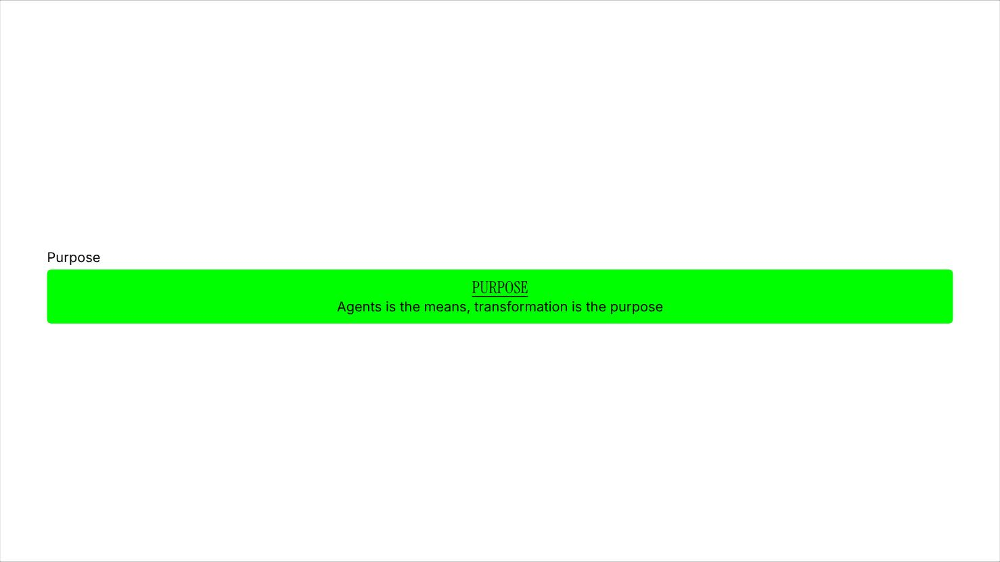
So the conclusion of this first chapter is about purpose. The purpose of using AI is not to give everyone one more agent or one more AI tool. Those are means. The purpose is transformation: moving from AI exploration to AI-empowered, so that every industry, department and role is empowered by AI, and then exploring whether parts of the company can become AI-native. Some processes, some roles and some ways of solving problems may get there first.
Where should the transformation start? The next chapter covers the business foundation for AI: one model that keeps learning about customers outside the company, and one that keeps learning about the company itself.
There is another reason I resist treating AI as a technology question: once we talk technology, we spend every day chasing its trends. Whenever I talk about AI, I feel I have to find things that do not change, some anchors. In business, some things do not change with time.
So my point is that your agents and your AI transformation need a business foundation. I call it two foundational models. One keeps understanding the outside world and sensing your users: can you understand your users more efficiently than before? The other is about the inside: your coordination, your processes, your knowledge and what you have accumulated, explicit and tacit. Can all that be drawn out better?
Let me quote something from seventy years ago. Peter Drucker said there is only one valid definition of business purpose: to create a customer.1 If we can create a new customer, find a need that has not been met, and build products, services and marketing stories that delight them, we cannot lose. Customers’ needs change too, so we always have to come back to the customer.
I mean customers in the broad sense: business and consumer, individual and corporate. In the age of AI we have a chance to reshape how we understand customers.
We have been working on one thing lately: using large language models to simulate how users make decisions, whether business buyers or consumers. Why can a language model simulate a user’s decisions? Think about how we communicate: through language. How do we think through a hard problem? By talking to ourselves in our heads. And the instinct of a large language model is to continue text, predicting over and over what the next character, the next token, should be. So once language is solved, we can go further and simulate thoughts, decisions and even behaviour.
Here is an example. To simulate Harry Potter, we can feed all the Harry Potter books into a language model and build a Harry Potter simulator. Before language models, if you asked whether Harry prefers coffee or juice at breakfast, the method was retrieval, the logic of search. Not any more. Now it is deduction: if Harry is this kind of person, with this past, what will he do next?
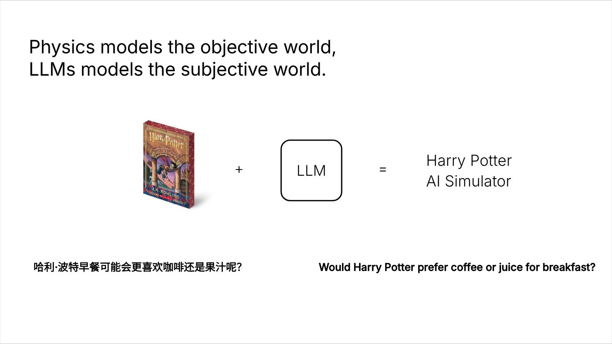
Have a guess: does Harry prefer juice or coffee? The simulation says juice, and pumpkin juice at that. The books never say directly what he likes to drink; the model inferred it from his life at Hogwarts.
That is modelling the subjective world: not looking up an answer but deducing what a person would choose. Starting from a user’s scattered past information, we can use AI to build a digital twin, a simulated copy of that person in the digital world. Because the model can simulate how this person talks and thinks, we can use it to understand the user and judge what they will do.
Most of what we hear online today is about AI replacing this job or that. But at the frontier of AI research, using AI to simulate and better understand people is an important direction. Here are three studies I like.
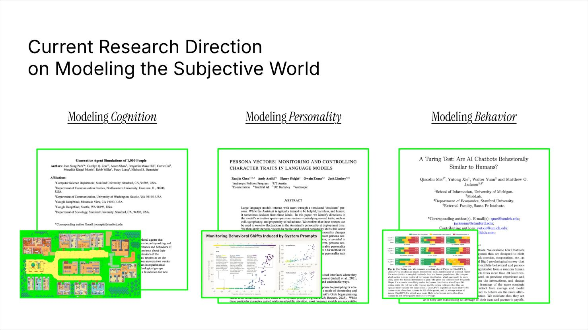
The first is the Stanford “Smallville” project from three or four years ago. Researchers built a virtual town with 25 autonomous agents playing all kinds of roles and interacting with each other. It sounds like The Sims.2 The same team then did something more serious: they used the method to simulate 1,000 randomly chosen Americans.3 You can ask them about spending, politics, why young people don’t want children. A person’s digital twin answers the same questions about 85 per cent as accurately as the person matches their own answers two weeks later. Is that high? Remember that the same person, asked the same questions two weeks apart, does not answer exactly the same way either. People are fickle. So the digital twin already captures the person quite accurately.
The second is persona vectors, research by a team at Anthropic.4 The last step of training a model is alignment: aligning it with human values so that it is selfless, kind and very even-tempered. So that last step actually makes the model less like a person and more like a saint. Persona vectors ask: in a conversation, which words and sentences trigger the model and bring it back to a human state? Why did it suddenly get angry halfway through a chat, and which sentences caused it? In other words, what kind of sentence makes a model suddenly act like a normal person: a little selfish, petty, even dark.
The third comes from economics. Economists study behaviour with economic games such as the prisoner’s dilemma, and these come with complete datasets. AI appears able to simulate a person, but its answers cluster around the single most probable one. Say everyone has 200 yuan in their pocket, and I come in, tell a very sad story and ask for support. Different people give me different amounts. Run a model a hundred times and nine times out of ten it gives about the same figure, around 80 yuan on average. People are not like that; people are random. So behavioural simulation works the other way round: it uses AI to recover human randomness.
Building on this research, we did the engineering and trained a model we call the Subjective World Model. Its purpose is to simulate all kinds of users, business and consumer. Its data comes from four layers. The first is expression: how people express themselves on Xiaohongshu, on WeChat. The second is narrative: interviews that ask why they express themselves that way. The third is cognition, the economic-game methods I just described. The fourth is behaviour: did they buy, did they click, did they do what you wanted them to do?
Why four layers? Because people are contradictory and complicated. My wife might say she is a rational consumer, but in a luxury store she may not be, and when it comes to the children’s education she is not either. What people say and what they do often differ, which is why we need all four.
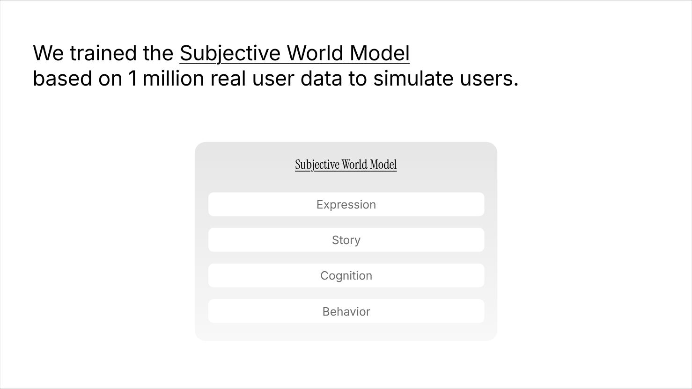
The model is trained on data from a million real users, and the application built on it is called atypica. In its first year it too has passed a million users, across 50 countries and regions (Tezign data, as of 2026). You type in a question about your users, and it breaks the question into research questions, finds suitable AI personas, forms them into a panel and generates insights automatically. You can also mix AI personas with real interviewees: real people set the baseline, AI provides the scale.
What changes if AI can play virtual consumers, help us understand their needs better, and invite them to co-create and evaluate? Let me take an industry that may be more cut-throat than most: electric vehicles.
A car used to take five to ten years to develop, one step after another. Now it takes five to ten months. So carmakers no longer have time for post-testing, doing something first and then checking whether it could be better. Everything has to be pre-tested, with heavy simulation up front.
An EV maker we work with launched a new brand, run by two very young presidents who wanted to rethink the process. Their first step was to define the users they wanted to serve: young families with two or more children in first-, second- and third-tier cities. Carmakers claim to spend more than anyone on user research and on building CRM and CDP systems (customer relationship management and customer data platforms). The irony is that all their user data is about the person driving. Think about it: with an SUV or an MPV, the driver is often not the decision-maker. The decision is usually made by the spouse and the children. However much data you have on drivers, it cannot stand in for the person who really decides.
So they used AI to simulate how families of three, families of four, even two or three generations together, choose a car. From strategic planning onward, they did not reduce users to a pile of labels such as segment, age and occupation. They worked with real families, one by one. Those are AI personas.
In product definition they had these AI personas debate: how should we differentiate? When two or three generations of a family discuss a car, who plays which role? What car would make them willing to pay 250,000 to 300,000 yuan? Development still followed a traditional carmaker’s process, but they could keep testing with the personas: if the seat is built like this, how will these people feel? Then marketing: if I spend this much on a campaign, is the message right? Don’t end up with lots of clicks and likes but the wrong message. What they kept saying was that before users walk into the dealership, they should already know this car costs 300,000, not 150,000.
Then user operations. Salespeople never knew what to say. The car’s specifications read like a manual, and salespeople had to make up their own pitch, saying different things to different people. Now it works the other way round: the AI personas are used to rewrite the whole sales script, and these virtual consumers can spar with salespeople, challenge them and help them build their skills. Many companies also run networks of brand-managed social accounts, a set of social media accounts run by the company. The content looks as if users posted it, but the company produces it centrally; we call this the central kitchen. This cast of AI characters are exactly the protagonists of that content.
This way, in about five months to a year, you can build an entirely new digital environment for testing with consumers. When we used to say we had user data, we meant phone numbers, contact details and purchase history. Those are all outcomes; they cannot predict anything.
As we see it, perhaps 95 per cent of user-related decisions, from what to post on social media today to how you define your customer and what product you make, are subjective calls. So beyond the big projects you already do well, small projects can be tested continually too. Understanding users stops being one project after another and becomes a lasting capability of the company.
Understanding users in a new way is not enough. We also need to use AI in the same way to understand ourselves.
Early this year an essay went viral, at least among the entrepreneurs I know: “From Hierarchy to Intelligence”, co-written by Twitter co-founder Jack Dorsey and Roelof Botha of Sequoia Capital.5 The authors argue that every company’s organization has been built around people as the coordinators in the middle. Headquarters’ views travel through middle managers to the front line, and the front line’s sense of the market travels back the same way. More and more companies want to be flat, but flatness needs tools and technology to support it.
A company, they write, needs two things: a world model of its own operations, and customer signals rich enough to make that model useful. Modelling your own operations means that every part of the company has to be understandable by AI.
Many companies’ spans of control are growing. There is a famous number online: Jensen Huang has more than sixty direct reports, and people at his company later told me it may now be over a hundred. He takes over a big meeting room every day, with all his direct reports in it. People can now manage far more than before, mainly because AI can supply the context instead of people passing it up and down. If people do the passing, the limit is Dunbar’s number (the number of stable relationships one person can maintain): one person manages ten or so. That is the ceiling. But if AI understands the context, everyone gets company information through an agent. That role used to be played by your manager or colleagues; now it is an agent. Then collaboration becomes a network rather than a hierarchy.
Of course, companies that were already digital find this easier. Companies with both online and offline operations need some time to make the shift. It depends.
What makes up a company’s internal context? A philosopher is being quoted a lot again lately, because of a concept he introduced: tacit knowledge. Once AI can handle huge amounts of explicit knowledge, people start paying attention again to the knowledge that cannot be put into words. Michael Polanyi said: we know more than we can tell.6 There are two kinds of knowledge. One is explicit and can be written down, such as a standard operating procedure (SOP). The other is tacit: a judgment, a choice, an accumulation.
In the digital age we turned nearly all explicit knowledge into data. In the age of AI we need to find ways, step by step, to connect tacit knowledge with digital content. Explicit knowledge is like an objective description of a customer: age, occupation, how many visits, how much they bought. Tacit knowledge is: I am a very good salesperson, and I suddenly realize this is a potential customer for a certain kind of sale. Or I look at a plot of land and sense what kind of place it could become. Those feelings are tacit knowledge. In the age of AI we really have a chance to connect the two, and let AI try to understand tacit knowledge.
Companies have always had two kinds of data. One is structured data, the kind a spreadsheet handles, with clear cause and effect. The other is images, text, video and sound, unstructured data. It used to be recorded but hardly understood; now we can try to understand it. To me the first is more like time’s enemy: once it is digitized, everyone knows it. The second is more like time’s friend: the more you accumulate, the more different you become. That brings us back to the prologue: AI should not be only about automation. It should also let what makes us different keep accumulating.
Some companies care a lot about “we have our own data and nobody else does”. Here is an example. We worked with a global fast-food brand whose every order goes through its app or mini-program. In theory it has the most complete record of user behaviour. But when we used its existing data, which burger, when and where, to predict a customer’s taste for the next item, the prediction was actually worse than knowing their MBTI, whether they are an introvert or an extrovert (MBTI is a popular personality typology; I-types lean introverted, E-types extroverted). Customers’ phone numbers are of course valuable. My point is that for a simple behavioural prediction, a company’s so-called proprietary data is not necessarily more accurate in business terms than knowing someone’s MBTI.
So the next step is to build context specifically for what AI can do. An example: we used to record meetings, but nobody had time to listen, so recordings were just records, not data. Now we record every meeting by default, because AI can read them. Recordings have gone from nearly worthless to an important input of knowledge.
More important still is to write down what has not been written down yet. For example, a property developer’s skill in placemaking, the feel its people have for development: can it gradually become context the company can call on?
But it is always true that the more we know, the more we know we don’t know. We now have tools that let us know more, but that does not make people less important; much remains unknown. The main change in this process is that accumulated knowledge is no longer written for people to read but for agents to read. So it can be as complex as it needs to be.
Here is an interesting example. We recently did a project for a global lifestyle brand that I call “the ontology of the dream of a better life”. The brand’s value is to give people a dream of a better life; “ontology” means organizing what we learn into a structure that agents can read.
Over the years the brand had interviewed more than 3,000 typical consumers in depth, born in the 1960s, 70s, 80s, 90s and 2000s. Our job was to turn these customers into the company’s collective knowledge, its context: what a better life means to them, who they are, what they think, and how all this connects with the brand’s ideas. We turned this into a foundation agents can read. So the agents no longer read an abstract process. They begin to understand how 3,000 people each understand the brand’s values.
Next time, we can invite these agents to the discussion: how should we run the next campaign? How should the next store look? Which product should we pick next? What should next season’s customer programme be? That is what I mean: the most valuable knowledge, the context agents read, is what has not been written down. It was never written before; now it can become the foundation AI reads.
Chapter 1 was about purpose: transformation is the purpose, agents are the means. This chapter is about the foundation of AI, which is also the foundation of business. It has two dimensions, one outside and one inside: keep understanding your customers and users, and keep understanding your company.
The next chapter covers the two modes of AI adoption that sit on top of these two models.
With these two models, one outside and one inside, we can run many AI projects between them. We call them use cases: front office (facing customers), middle office (supporting the business), back office (running internal operations), all kinds. These use cases fall into two modes. We all know the first well, but I think the second matters even more.
The first mode, to put it plainly, is humans using AI. Each of us has plenty of AI tools on our phones and computers, and we drive them to work for us. Every time I talk to an AI, it is smart for twenty seconds and makes me feel it has done a lot for me. People steer the answers, and the conclusions are fairly open.
Everyone knows these tools, and they are so-called standard tools: buy them and use them out of the box, like the various copilots and office assistants. They are general-purpose, and anyone can pick them up.
The second mode I call AI using humans. The term is not ideal, but to make the point plainly: on one side humans use AI, on the other AI uses humans.
AI using humans means AI runs in your background around the clock. Sometimes it asks you for permission, sometimes for judgment, but it is smart 24/7, not smart for twenty seconds after you ask it something. We call it a proactive agent.
It is a continuous agent that keeps working. It senses signals from outside, plans, does the work and evaluates the result on its own, and now and then it asks you a question.
Take a scene you may know better. How many new products does a leading Chinese coffee chain launch in a year? Ten? A hundred? It develops about two to five a week. Of course, 80 to 90 per cent of them never reach the market. Growth in consumer businesses now comes from making more new products for known customers, because the single blockbuster no longer exists. So they have to keep making new products.
For a global food company we built an agent that develops new products around the clock. In the background it keeps looking for market signals: what are competitors doing? What new IP is emerging? What are these users newly interested in? What co-branding should we do? On the other side, it uses the user model described earlier to keep gathering the voice of the customer.
It sends an email to the R&D team. If the team does not reply within 24 hours, it moves to the next step on its own: it designs the packaging and works out the flavour. If there is still no reply, it goes on to prepare the marketing campaign as well: the in-store displays offline and the plan online. Then it uses the consumer simulation to test whether the ideas are any good. Run this way, the whole process can produce about 1,000 to 2,000 new products a year.
I asked the head of the team whether the AI’s products were any good. About 80 out of 100, he said. I said 80 isn’t good enough. He said that’s not the point: people used to do everything from 0 to 80 themselves; now they can start at 80. So 100 is no longer the finish line; 120 or 150 is.
This is really interesting. We used to have a lot of transactional work. To make a new product you would start with a meeting of dozens of people all talking at once, spend ages getting from 0 to 80, and never have time for 80 to 100. Now AI runs constantly in the background and makes 0 to 80 easier, so people can work on 80 to 100, or 80 to 120.
The same is true in many industries, including my own field of research. Writing a paper used to mean that perhaps 70 or 80 per cent of the time went on formatting and checking references. Now nobody needs to think about that, and all the time can go into research.
This shows us a new paradigm of human–machine collaboration: many proactive agents running in the background 24/7, even across departments and functions. It is not your assistant of today. The question it asks is: among these five people, these five roles, how much could AI connect? If each person only gets a little more efficient, collaboration between people stays inefficient. Can we connect it?
So this is the agent we built: AI automatically picks up signals, plans, creates (that is, does the work) and evaluates. On one side is the consumer context, on the other the company context, and it keeps innovating new products.
But this did not happen overnight. At first we built two copilots, one for insight and one for packaging. Gradually we connected them into a workflow. Once you have a workflow, you are crossing departments: before, you were helping one function; now you are redesigning how work flows. After that, you close the whole loop and design how people and agents work together. The process took more than a year.
We have used similar methods with many clients. One is a global consumer health company. Another is a global food and beverage group, whose biggest initiative this year is E2E, end-to-end marketing and growth: every stage of marketing reshaped with AI. At each step: what the agents do, what the agency does, what people do, what the team does, what the systems do, and what context and intelligence lie underneath.
We also do other interesting things. One client is a city development group. The district it runs competes fiercely with its neighbours, so it has to keep finding the mix of businesses that suits it best. It now wants tech and consumer businesses, so it has to keep scouting: which industries and which brands are on the rise? We help it keep gathering these potential brands and tenants, use AI to analyse automatically how they would fit with the district’s mix, and monitor the industry as a whole. In effect, agents play the role of leasing staff, not one but several, scouting signals, finding fits and drafting proposals, while people make the calls.
We are also working on a scene closer to property. Buildings are already well digitized and smart, but it all ends up on a dashboard, and someone still has to coordinate what it shows. Now we have an agent watch that dashboard: how long cleaners stay in each building, how long security guards stay, whether they are really working; what separates the best cleaners and guards from the average, what could be optimized, and how to improve the work-order system.
We are doing this for the property operations of a large state-owned bank. We are paid on savings, so there is one number I know for sure: this year the total property cost fell by 10 per cent. The reason is that AI watches the dashboard in real time, around the clock. If people watch it, coordination takes time. We used to have no way of knowing whether a cleaner’s capacity was enough or fully used; now we can.
So we gain another dimension: there are two ways to bring AI into work. One is agents that serve people, which everyone should use. The other is people serving agents: agents run in the background and greatly shorten the chains of cross-department work.
When the goal is unclear, humans use AI. When the optimization goal and the work goal are clear, build long-running, continuous, cross-department agents and let them run.
There are two ways to talk about AI: the technical way and the House of Cards way, which is about power and manoeuvring. This chapter is a bit like the latter. A term has been hot lately: sovereign AI. The reason is that as more and more intelligence is built on top of models, does that intelligence belong to the model or to you?
This is debated a lot in America, which has the best closed models. So a group of people oppose closed models and argue for open-weight ones. A closed model can only be called; an open-weight model can be downloaded, run and adapted on your own servers, so control stays with you.
I think that as we push AI today, we need to own our cognitive sovereignty. You should be able to say: this is the context I built, these are the agents I built, and whether I put them on model A, B or C, they can move.
This may matter even more than data security. Data security asked whether the data was yours. Now the question is: the intelligence that comes from your data, from your experience, from your tacit knowledge, is it yours?
The model sits at the bottom, with all kinds of agents built on top. To make an agent useful, a company has to build a lot of its own intelligence on top of the model. This gets technical, so I will only list it. Post-training: can the model be trained to suit your company? Context: is the context the model draws on yours? The harness, the model’s boundaries, what it may and may not do: did you set it? Continual learning: the loop I described earlier, are its results yours?
We will not build the models ourselves, but at least the layers above them should be something the company can take with it.
Today the model underneath can be Qwen, MiniMax or Zhipu, or you can switch flexibly among three, four or five models. That matters a great deal. So companies now keep using a term: model agnostic. In the cloud era we talked about being cloud agnostic, able to switch to any cloud. In the model era we need to be model agnostic.
This matters more than where the data is stored. As I said earlier, even with your own user data you may predict less accurately than MBTI, because AI has become so capable. The richest store of data in the world is inside the models. Your ability to harness models and turn them into your own intelligence, and whether what you learn truly belongs to you, matter more than the data itself.
How do you move AI capability over to the company? Take a global agribusiness and food group. We worked in three steps: first, we build it for you; second, we build it together; third, we teach you to build it. Step by step, the whole system and the capabilities on top of it moved over to the company. This matters, it takes a series of steps, and it takes time.
Last year every company thought that installing an agent-building platform and a vibe-coding tool (one that lets you program by describing what you want in plain language) meant doing AI. This year many found problems. One company gave each of its roughly 1,000 developers a coding AI last year; this year the results turned out to be a mess, and we went back in to help them sort it out. So there is a threshold, but in the end external capability has to become your own.
So on top of all the layers we add one more: own your own intelligence. Be model agnostic, with full ownership by design. From day one, an AI transformation project should be designed to hand control of AI back to the company: it can switch models at any time, is never held hostage by a model, and can move its models and AI capabilities out in full whenever it wants.
Every year I run a not-very-serious poll of entrepreneurs on WeChat Moments: where does AI transformation get stuck?
In 2023 people thought the biggest obstacle was AI infrastructure, which really meant data. In 2024 it was model capability. In 2025 the answers were about even. In 2026 the answer was 1 : 2 : 7: model 1, infrastructure (including data) 2, people and organization 7, with 70 per cent saying the obstacle is people and organization. Technology is no longer the big obstacle: people look at their own technology and infrastructure and find them good enough, and their digitization is decent. The obstacle is people and organization.
I think people and organization are both the bottleneck and the opportunity to differentiate. It is the same point as the complementary investment in Chapter 1: what lies beyond the technology is the larger part.
There are many ways to transform a company with AI. I want to borrow an idea from the architect Buckminster Fuller. He said that we rarely solve a problem head-on; we should instead find a new solution, one so good that the old problem simply gets done the new way. Think of it like this: to cross a river, I should not teach people to swim, because swimmers can always drown. I should build a bridge, and make swimming look obsolete.
I think transformation inside a company should work the same way. So lately we have run many labs. We did not walk into a company and tell everyone to switch to the new way. Recently, for example, we worked with a beauty company on a 30-person lab that uses AI-native methods to understand consumers, like the carmaker earlier, and to develop and market new products, to see whether it can produce a new product in six months. This group works the AI-native way and builds an example others can learn from.
Say a company develops ten new products a year. Pick one and do it AI-native from start to finish; once it works, the other nine can learn from it. That beats rolling out AI layer by layer across marketing, then sales. When a few people get a small loop working, most people become willing to change. People who haven’t seen it only see problems; once they see it, they see possibilities.
Our recent projects all work this way: build it first so the whole company sees the change, instead of forcing the whole company to change completely, which is very hard.
Second, training matters. AI is often called another industrial revolution, but for talent I think it is an anti-industrial revolution. The logic of the industrial revolution is the division of labour: across every industry, each person has a specialty and a role, in universities and even more in companies.
Now AI can raise everyone’s floor. Each of us can do more, so each of us can take responsibility for outcomes, not just outputs. Output answers only to your own function; outcome answers to the company’s core goals. When everyone owns outcomes, the organization changes.
So finding, training and regrouping talent becomes very important, rather than letting each role tend its own small plot a little more efficiently with AI. Organization matters, and so does finding and developing talent.
Lately I see many companies running non-tech hackathons. Hackathons used to be for geeks. Now many companies run them for people who are not technical: the people most eager to try AI take a need of their own, solve it with a little AI, and the company gives them some reward.
Last year MIT published a headline-grabbing report saying that 95 per cent of generative AI projects fell short of expectations on return.1 It won’t be that number this year. But another finding is more interesting: many employees were already using their own AI tools, which the researchers call shadow AI. These people quietly use AI to solve problems, and so show the company exactly how to use it: how AI can really solve a finance problem, a legal problem, a design problem, rather than everything coming purely from the top.
So we will see organizations change. One thing I strongly believe: hand work from 0 to 80 to agents as much as possible, and work above 80 to people.
AI enters an organization in three ways: beneath people, beside people and between people. Beneath: everyone keeps their seat, a layer of AI labour grows underneath, and each person moves up a step. At a food and beverage group, for example, agents batch-generate channel content for every team. Beside: AI takes on a whole function, sits alongside human teams and reports to the same manager. At a city development group, for example, the market-intelligence agent is a member of the team. Between: AI sits between management and teams, watching the work flow and pushing it forward, like the property-management agent that briefs, reminds and checks the team every day. All three will happen, in part.
By now the full picture of AI is coming together: purpose at the top, then the two modes of using AI, the two foundations of AI, the technical choice of owning your intelligence, and finally people and process.
Our view has always been that agents are only the means; transformation is the purpose. Or put another way, transformation is the product.
We are not really a consulting firm; we are a technology company. But I think that in AI transformation, builders like us need to take on consulting work. The reason is that no AI project today is purely technical. To a large extent it is about how a company changes. In other words, a company’s change through AI cannot rest on a slide deck or a theoretical framework.
First, you must have agents really running in production. AI is not like the software systems of old, which stayed the same once they went live. These AIs are almost alive: you have to use them, give feedback, tell them how to get better, even design data and processes specifically for them. So it is alive, and you only know once it runs.
Second, as I said earlier, ownership transfer by design. What matters most is that the company has the capability itself, so we build together.
Third, you need a good evaluation system. Without evaluation you don’t know what AI transformation means, or what AI should be doing.
Fourth, go one use case at a time. As Fuller said, do it bit by bit, make it work, then expand.
Fifth, every round builds up context. The better the context, the better the AI performs.
Finally, of course, it gradually becomes the company’s own capability.
We do three things ourselves. First, we build AI-native products; the user-simulation and product-innovation systems I described are our own. Second, we do frontier research on AI: technical R&D at Tongji, business models at CEIBS, and recently a lab at Fudan on management science and talent development. Third, we run all kinds of communities, communities of builders and creators.
I mention these three because builder-led transformation needs the people doing it to stay at the frontier themselves.
AI transformation rests on a few basic principles: security and compliance; model and cloud agnostic; and, finally, owning your own intelligence.
The work runs roughly like this. First an AI diagnosis, then an AI strategy and an AI tech stack. But I have to stress complementary investment again; remember the one-to-nine from Chapter 1? Beneath the technology you need two more things, organization and people: alignment in the leadership team and training for the teams. The company’s own teams have to invest too. Only then does an AI transformation produce results.
One thing really matters. In our discussions with many companies, we talk a lot about use cases, about problems, about opportunities, but not enough about goals. I keep asking: can we have a quantified goal? Without one, it is hard to know which way to go.
An AI budget does not buy a system; it buys capability. The goal is to change how work is done (not necessarily on day one), to build up knowledge, and to let capability compound.
Some basic numbers first. A survey of 1,330 companies found that average AI spending is about 3.3 per cent of revenue, which is quite a lot.1 Seen another way, AI takes more than 15 per cent of IT budgets, 36 per cent of digital budgets and 15.3 per cent of marketing budgets.2 In other words, AI money is spread across all kinds of business lines and budgets.
Of that 3.3 per cent, 0.5 points sit inside IT and 2.8 points outside it, in business lines and in functions such as HR and finance, where they produce business results directly. Value is distributed the same way: 68 per cent shows up in business results, 21 per cent in functions and 11 per cent in IT infrastructure.1
For AI to move from pilots to a standing budget line, it has to extend gradually from the IT budget into business budgets. That is why AI transformation today is usually a project owned by the top boss, by the whole leadership team, not just by the head of IT. As one saying goes, a company that treats AI only as IT has got its first step wrong. So more and more CFOs are taking charge of AI transformation or getting involved, because they see AI as an investment, not just a cost.
What is most underfunded is precisely the 7 in 1 : 2 : 7. A few macro statistics: among companies that cut training budgets, 47 per cent raised AI spending at the same time, investing less in people while investing more in AI. Only 27 per cent of executives have a comprehensive AI talent strategy. Fewer than one company in ten is redesigning roles around AI.3
Last year the share was even lower, but this year it has started to grow. We are seeing companies design roles specifically for AI: not a chief AI officer so much as roles that use AI for growth, roles that deploy AI, and so on. These new roles will appear.
Between leaders and laggards, 55 per cent versus 17 per cent do strategic workforce planning for AI; between trailblazers and followers, 60 per cent versus 24 per cent of the AI budget goes to upskilling employees.4 So much of the investment should go into complementary investment, into the 7.
There are roughly four pockets. The first is the technology foundation, which we have covered. The second is use-case agents. Agents must start from a use case. An agent is not one more system grown on top of some IT system, but AI that solves a specific business problem, so it needs a clear business owner. The third is people and capability. The last is governance and change. All of these need the company’s managers to take part.
Where does the money go? AI spending is a broad notion, but it breaks down into a few parts. Consulting and development are billed in person-days, that is, by the number of people and days put in. Many foundational products are subscriptions you don’t need to build yourself, because they move fast, such as context systems and harness systems; building them in-house is very costly, and the technology changes too fast to maintain. The third part goes to people and change. Fourth, once people start using AI, especially proactive agents, token consumption rises, and that becomes a cost. Last come advisory and governance: always be clear about what kind of project you are doing.
In one sentence: whoever benefits pays; whoever will own the capability invests in it. IT funds the 1 and the 2; business units and HR together fund the 7.
How should ROI be measured? This is my own feeling, and also what I hear from many entrepreneur friends and senior executives: one year is too short, three years too long, two years just right. If you expect to break even in one year, the build-up time is probably too short. Three years, and you may not be able to wait, because AI changes so fast. So two years is right.
When we work with clients, we plan by the quarter: one use case each quarter, for two years. The data says good companies may see results in 11 months, and laggards see them in 17.1 So as long as you do it, results come within a certain time.
And the use cases multiply, and they iterate. Like the product-innovation agent I described: today you build a simple use case; tomorrow three simple ones can be chained into a complex one. All of this accumulates, as long as you do it.
Every company has this discussion: what is AI transformation actually worth to us? To put it plainly, because my own company needs to grow too: what is growth? Growth is three things: efficiency, revenue, or building muscle. In English: efficiency, growth, capability.
What is efficiency? Saving, or working faster: saving time, shortening cycles. What is growth? Finding new opportunities for business growth. What is capability? Whether we can invest in the future: in future talent, future products, future ways of managing.
We must have a clear target value before we can choose where AI should go. Without a baseline and without ROI, transformation is hard. So there are three very high-level questions worth discussing: where does the money come from? How fast? What is the return?
To make this more concrete, take a global pharmaceutical company. Its goal sounds very Chinese, but it was actually set by global headquarters: four threes. The first three is time: within three years, triple the productivity of front-line staff; do the same middle-office work with a third of the people; and make high-quality decisions at the top three times faster. The last three is very hard to measure, but the first two are easy to see.
To get there, they have five tracks over three years: marketing, sales, medical (in effect, marketing to doctors), R&D and internal management. Each track covers three basics: re-orchestrating business processes, adjusting the underlying technology and data architecture, and designing and building the organization’s agents.
Then they decided what to buy and what to build. Buy what? Models, without question; nobody trains their own. An enterprise agent architecture, and a context system. Build what? The agents themselves, and the content of the context. The systems are bought, but the agents and context on top are built in-house. That is the intelligence they can take with them.
I am often asked which part of writing such a goal is hardest and most contested. As far as I know, two discussions take the most time.
The first: should it be three times, or two, or four? That is a big debate. They chose three for the same reason as one year too short, three too long, two just right: five is too aggressive, one is no challenge, so three. In the end it is an intuitive choice. But three sends a signal: not a small gain today, and not becoming a completely different company today either, but doing our utmost to get what is in front of us right.
The second is execution: buy or build? Buying means whether to buy a mature solution; building means deciding what to build yourself. In the end they chose to build together with an AI company, along these tracks.
From “should we do it” to “what does success look like”: the more concrete this step, the easier the transformation is to start.
The first seven chapters covered why and what. This last chapter is about where to start: with an AI diagnosis.
In a diagnosis we first read the market from the outside, then run many interviews inside with the key roles, and analyse what we find with our frameworks to see where the transformation should start. After the diagnosis we define company-wide capability goals and priority use cases, which is the AI strategy; then we build the company’s own platform and agents, which is the AI tech stack, model agnostic and cloud agnostic.
But again I have to stress complementary investment. Beside the technology track there is the organization and people track: first align the leadership team, because an organization can only go as far as its leaders; then train the teams, and find and activate the AI champions. Only where the two tracks meet is there an agentic transformation.
In a diagnosis we interview and map around six questions: what role does AI play in the company? How is value counted? How is the quality of output measured? How is data security handled? How will the organization and people change? Who drives it? On each question, a company sits roughly at one of four stages.
From a tool used now and then, to a colleague inside the workflow, to a way of changing the organization and the business. In leading companies, AI runs inside business processes and changes how work is allocated. McKinsey’s 2025 survey found that AI high performers are nearly three times as likely as other companies to have fundamentally redesigned their workflows. Industries differ, of course: if you are in a fiercely competitive consumer market, you should think further ahead.
This is something I care about a lot. Awareness anyone can top up by scrolling short videos; how value is counted is tied closely to each company. The first stage is “catch up first”: everyone is talking about AI, but there is no clear model for its future returns, so you start with one or two use cases. The second stage is “saves time, feels good”: AI shortens some piece of work and people feel the difference. The third stage is use cases with baselines and metrics, some kind of benchmark. The fourth is company-level goals that are aligned, with a shared pace.
Moving from the third stage to the fourth usually takes management to drive it: there has to be a clear sense of direction. Whether it is four threes or something else, it cannot stay qualitative; it needs numbers. Leading companies set baselines and goals first, then choose use cases, and use company-level goals to get everyone aligned on pace.
The first stage is to use AI only where it is accurate and not where it isn’t, which is perfectly normal. The second stage relies on individuals to check: people who are good with AI simply use it better than others. I once talked with a senior partner at a consulting firm who felt he used AI far better than the young people under him, with the same tool. Individual skill determines AI performance. The third stage is more advanced and relies on context and standards: can the company build a good environment for AI to run in? That environment really is an environment, like the neighbourhood we live in, except that now the residents are agents. The fourth stage is a feedback loop of continuous evaluation.
There are two approaches in AI today. In one, people hard-code the workflow and tell the agent what to do in step one, two, three and four. In the other, you draw the boundaries and let AI work freely. More and more people lean towards the second, because AI keeps getting smarter. It is like children: if a child has no particular gift, you tell them one, two, three; if a child is gifted, you only tell them what not to do and let them get on with the rest. So context and standards become very important, and so do mechanisms for iteration and continuous evaluation.
In leading companies, quality depends on the context and standards the company gives AI. That is a capability the company has to build, not something left to each person’s good habits. If everyone uses their own agent, the good conversations and lessons never settle into the company, and never become its capability.
The first stage is to forbid any input and simply not use it: if we don’t know whether it is safe, don’t use it. The second stage is individuals using outside tools on their own: the company provides nothing, so people take company information to outside AI. You can assume your staff write with AI; I now assume my students write their papers with AI too, and if one gets a character wrong I almost treasure it. The worry is that you don’t know how many outside tools they use, and the information has already left. The third stage is building a controlled environment, and many companies’ IT teams put a lot of effort into this. The fourth stage is smarter. We recently worked with a technology company with very high security requirements. Its pain was that, because security was so tight, nothing could be used at all; it had effectively downgraded its own weapons. We are helping it build a system that grants access by level of risk. For user insight, for example, the data came from outside in the first place, so why can’t it go out? But for user testing of a core product, the product concept must not leave. So some things can live outside and some inside, with better tiering: convenience first for some, security first for others.
Leading companies provide a controlled enterprise environment so that people dare to use AI and use it with confidence, instead of quietly using it outside.
Some people worry: will I be optimized out? Every company’s culture is different. Some create insecurity on purpose; others create security. My own company chose to create security, so we do a lot of training. Many say young people are more AI-native. I don’t think so. I teach at a university, and my students do not become AI-native on their own if nobody teaches them. So everyone has a chance to change. My father is over seventy and uses more tokens than I do. With the will, anyone can become more AI-native.
The four stages here run from worrying about being optimized out, to training individual skills, to adjusting roles and processes accordingly, to linking AI with talent systems and career paths, so that AI is tied to a person’s career and to the organization. A company with a clear AI vision can also attract the best talent in its industry.
The most passive way is to be dragged along, forced to act, waiting for orders from above. The second stage is departments raising needs and running pilots, bottom-up. The third stage is building capability into a system. The fourth is top and bottom moving together, each pulling the other along.
Throughout this book I have said that managers need a strong vision, which is top-down. But AI also has an important bottom-up dimension. So I have always thought the best way is top and bottom moving together: neither one grand plan nor people quietly experimenting below, but the two combined organically. Many use cases are in fact discovered by people trying things, but they need to point in the direction the company wants to go.
Top-down means crossing departments. Only cross-department matters need to come from the top, and only the bosses can solve them.
Bottom-up means you have one very painful problem in one place: can you solve it yourself with AI, using whatever tool? At our company, for example, expense claims were sorted out by colleagues in finance themselves. We run a hackathon every month, with rewards and badges that count towards performance at year end. Another example: last year we wrote about 500 product R&D documents, but the business side always felt R&D did not give them enough “ammunition”. We used to need someone to turn R&D documents into marketing material. Now AI does it, and the tool was built by colleagues on the business side. We strongly encourage this.
Then there is AI that truly builds muscle, with no short-term ROI to measure, such as accumulating knowledge. Open questions like these need continuous exploration, and I suggest an AI Lab for them: it doesn’t need much investment, but it needs to keep trying, because new technical possibilities and new ideas can appear any day.
Even very mature companies go through a process of diverging first and converging later. They do not converge on day one; converge on day one and you will probably converge on the wrong thing. If you spend too long debating the roadmap while your own trial and error lags behind, the roadmap becomes armchair strategy.
So both matter. Some quick wins are obviously worth doing; even if you can’t think them through, they are worth doing, so do them while you plan, and run both at once. That is also why we always say AI transformation is both technology and organization; and once it reaches organization and process, it is management’s job.
Where to start? My advice is to add first, then see where to subtract. Start with what is most distinctive about the company and what it cares about most, such as how it understands its users, and let AI amplify that first. Your existing teams will feel supported rather than replaced. Once the capability has grown, look at which processes can be cut.
Which brings us back to the line in the prologue: automation is the floor, differentiation the ceiling.